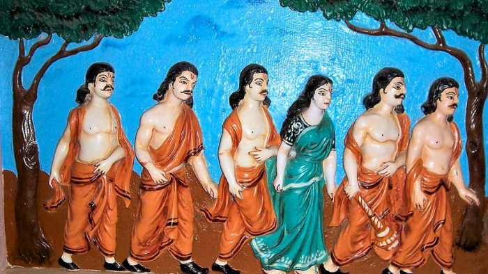
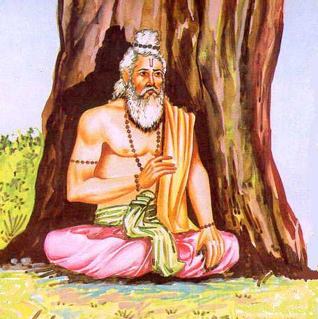
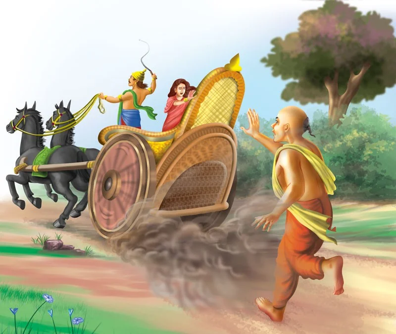
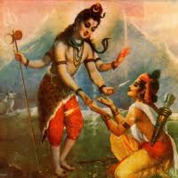
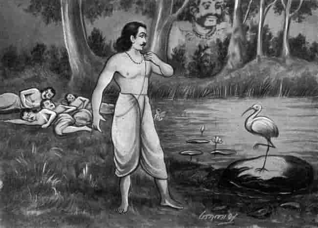
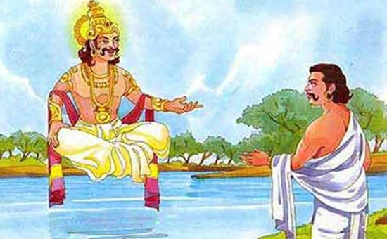
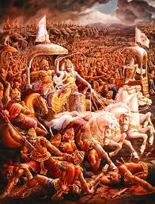

अध्याय 3 : वन पर्व
वन पर्व महाभारत का तीसरा प्रमुख पर्व है, जिसे *अरण्यक पर्व* भी कहा जाता है। यह उस समय की गाथा है जब पांडवों को जुए में पराजित कर के बारह वर्षों के वनवास और तेरहवें वर्ष के अज्ञातवास के लिए मजबूर किया गया। यह पर्व केवल वनवास का विवरण ही नहीं, बल्कि जीवन, धर्म, तपस्या, परीक्षा, और आत्मचिंतन की गहराइयों को भी दर्शाता है।
मुख्य विषय:
- पांडवों का हस्तिनापुर से वन गमन
- ब्राह्मणों का साथ और विदुर का आगमन
- धर्म की चर्चा – युधिष्ठिर और ऋषियों के संवाद
- द्रौपदी का क्रंदन और श्रीकृष्ण का वचन
- जयद्रथ द्वारा द्रौपदी का अपहरण
- अर्जुन का दिव्यास्त्र प्राप्त करने के लिए तीर्थ यात्रा
- धर्म, नीति और तपस्या के विविध प्रसंग
- नल-दमयंती की कथा, रामकथा और अन्य धर्म कथाएँ
- कीचक वध और विराट नगर का संकेत
🌳 पांडवों का हस्तिनापुर से वन गमन
सभा का निर्णय और वनवास का आदेश
द्यूत क्रीड़ा में सब कुछ हारने के पश्चात, युधिष्ठिर ने शांत स्वर में घोषणा की कि वे शर्तों के अनुसार बारह वर्षों के वनवास और तेरहवें वर्ष के अज्ञातवास के लिए तैयार हैं। पूरी सभा मौन थी – केवल विदुर की आंखें नम थीं। भीष्म, द्रोण और कृपाचार्य जैसे विद्वानों का मौन, अन्याय पर सहमति समान प्रतीत हो रहा था।
राजसी वस्त्रों का त्याग
पांडवों ने अपने आभूषण, मुकुट और रत्नजटित वस्त्र त्याग दिए। उन्होंने मृगचर्म धारण किया, जटा बाँधी और तपस्वियों की भाँति सरल जीवन अपनाने को तैयार हो गए। द्रौपदी ने भी राजमाता की भव्यता त्याग कर साध्वी रूप धारण कर लिया।
हस्तिनापुर की जनता का विलाप
जब पांडव नगर से बाहर निकले, तब हस्तिनापुर की गलियाँ रो पड़ीं। स्त्रियाँ, वृद्ध और बालक सभी मार्ग पर खड़े होकर विलाप कर रहे थे। लोग युधिष्ठिर से आग्रह कर रहे थे कि वे न जाएं, पर उन्होंने कहा – "धर्म का मार्ग कठिन अवश्य होता है, परंतु मैं उससे विमुख नहीं हो सकता।"
वन में प्रवेश और पहला पड़ाव
नगर के बाहर, एक सरोवर के किनारे उन्होंने पहला पड़ाव किया। वहां युधिष्ठिर ने पृथ्वी माता को प्रणाम किया और विनम्र स्वर में कहा – "हे धरती माता! आज से तुम मेरी शरण हो।" द्रौपदी मौन थीं, पर उनके भीतर प्रतिशोध की ज्वाला प्रज्वलित हो चुकी थी।
वनवास का प्रारंभ और दिनचर्या
पांडवों ने एक तपोवन में अपनी कुटी बनाई। युधिष्ठिर धर्म चर्चा में लीन रहते, अर्जुन अस्त्र विद्या का अभ्यास करते, भीम रक्षक की भूमिका में रहते, नकुल-सहदेव औषधि व वन विज्ञान सीखते और द्रौपदी आश्रम की व्यवस्था संभालतीं।
द्रौपदी का मौन संकल्प
एक दिन जल लेने जाते हुए द्रौपदी को स्वप्न आया – जिसमें वे सिंहासन पर हैं और दुर्योधन उनके चरणों में। उन्होंने यह स्वप्न केवल दृष्टि नहीं, एक दिव्य संकेत माना और स्वयं से वचन लिया – "मैं अपमान का बदला अवश्य लूँगी।"
अर्जुन की देव यात्राएं
अर्जुन तपस्या हेतु हिमालय गए और वहाँ इंद्र, यम, कुबेर और वरुण से दिव्यास्त्र प्राप्त किए। उन्होंने स्वर्ग की यात्रा की, वहाँ गंधर्व संगीत और दिव्य विद्या सीखी और पुनः अपने भाइयों के पास लौटे।
भीम का हनुमान मिलन
भीम ने गंधमादन पर्वत पर हनुमान से भेंट की। हनुमान ने उन्हें आशीर्वाद दिया और आश्वासन दिया कि महाभारत युद्ध में वे अर्जुन के रथध्वज में उपस्थित रहेंगे।
कष्टों से भरा वनवास
पांडवों को वनवास में अनेक कठिनाइयों का सामना करना पड़ा – यक्ष प्रश्न की परीक्षा, कीचक द्वारा द्रौपदी का अपमान और उसका वध, जयद्रथ का अपहरण प्रयास, आदि। हर घटना ने उन्हें भीतर से और अधिक दृढ़ बनाया।
युधिष्ठिर की आंतरिक साधना
युधिष्ठिर इस वनवास को केवल दंड नहीं, एक साधना मानते थे। वे प्रत्येक दिन धर्म, सत्य, संयम और क्षमा पर चिंतन करते। उन्होंने अनेक ऋषियों से वेद, उपनिषद और नीति शास्त्रों का ज्ञान प्राप्त किया।
आत्मबल की वृद्धि और प्रतीक्षा
पांडवों ने इस वनवास को शोक में नहीं, आत्मविकास में बदला। उन्होंने शस्त्र और शास्त्र दोनों में सिद्धि प्राप्त की। द्रौपदी ने स्त्री शक्ति का मौन प्रतीक बनते हुए, अपने आत्मसम्मान को जीवित रखा।
वनगमन – एक संकल्प की शुरुआत
यह वनगमन हार नहीं, तपस्या थी। यह उस युद्ध की भूमिका थी, जिसमें धर्म और अधर्म आमने-सामने आने वाले थे। यह उस युग की तैयारी थी, जहाँ कुरुक्षेत्र में अन्याय का अंत और न्याय की स्थापना होनी थी।
समापन
पांडवों का हस्तिनापुर से वन गमन, भारतीय संस्कृति में त्याग, साहस, धैर्य और धर्म के पालन का अद्वितीय उदाहरण है। यह केवल एक ऐतिहासिक घटना नहीं, बल्कि प्रत्येक व्यक्ति के जीवन में संघर्षों के समय मार्गदर्शन करने वाला दीपस्तंभ है।
ब्राह्मणों का साथ और विदुर का आगमन
वनगमन के बाद प्रारंभिक संघर्ष
पांडव जब वन में पहुँचे, तब उनके साथ केवल द्रौपदी ही नहीं थी, बल्कि अनेक ब्राह्मण और ऋषि भी उनके साथ वनवास के लिए चल पड़े थे। यह सब सुनकर युधिष्ठिर अत्यंत चिंतित हो उठे। उन्होंने सोचा, “इन ब्राह्मणों की देखभाल कैसे होगी? उनके लिए भोजन और सुरक्षा की व्यवस्था मैं वन में कैसे करूँगा?” युधिष्ठिर के हृदय में जनकल्याण की चिंता सदैव रही है। वह केवल अपने परिवार के लिए नहीं, अपितु उन सबके लिए सोचते थे जो उनके साथ थे।
युधिष्ठिर की ब्राह्मणों के प्रति चिंता
युधिष्ठिर ने अपने भाइयों और द्रौपदी से परामर्श किया और कहा, “हमने वनवास स्वीकार किया है, परंतु ये ब्राह्मण और तपस्वी जो धर्म और सत्य के पथ पर चलते हैं, हमारे साथ क्यों आए हैं? हम कैसे उन्हें भोजन देंगे?” भीम ने कहा, “भैया, आप चिंता न करें। हम जंगल से जड़, फल, मूल, और कंद लाकर उन्हें अर्पित करेंगे।” नकुल और सहदेव ने भी सहमति दी। परंतु युधिष्ठिर को समाधान नहीं मिला। वे सोचने लगे कि बिना किसी स्थायी साधन के इतने ब्राह्मणों की सेवा नहीं हो पाएगी।
श्रृंगी ऋषि का परामर्श
तभी एक महान ऋषि श्रृंगी वहाँ आए। उन्होंने युधिष्ठिर को देखकर कहा, “राजन! आप धर्मात्मा हैं और ब्राह्मणों की सेवा करना आपका कर्तव्य है। मैं आपको एक उपाय बताता हूँ।” उन्होंने बताया कि भगवान सूर्य से प्रार्थना करने पर उन्हें ऐसा पात्र प्राप्त हो सकता है जो कभी खाली न हो और जब तक द्रौपदी ने भोजन न कर लिया हो, वह पात्र अन्न से भरा रहेगा। युधिष्ठिर ने यह सुनकर हर्षित होकर भगवान सूर्य की तपस्या की।
सूर्यदेव का वरदान
भगवान सूर्य ने युधिष्ठिर को दर्शन दिए और कहा, “हे धर्मराज! तुम्हारी तपस्या और धर्मनिष्ठा से मैं प्रसन्न हूँ। मैं तुम्हें अक्षय पात्र प्रदान करता हूँ। जब तक द्रौपदी ने भोजन न किया हो, तब तक यह पात्र अन्न से भरा रहेगा और जितने भी व्यक्ति भोजन करना चाहें, उन्हें तृप्त कर देगा।” युधिष्ठिर ने सूर्यदेव को नमन किया और वह दिव्य पात्र पाकर उनके मन की चिंता दूर हो गई।
ब्राह्मणों की तृप्ति और प्रसन्नता
द्रौपदी को वह अक्षय पात्र सौंप दिया गया। अब प्रतिदिन वे सभी ब्राह्मण, तपस्वी, ऋषि, और पांडव उसी पात्र से भोजन करते। वन की कठिनाइयाँ तो थीं, पर अब भोजन की चिंता नहीं रही। यह देखकर ब्राह्मण अत्यंत प्रसन्न हुए और पांडवों के साथ अपने वनवास को तपस्या और धर्मचर्चा के रूप में बिताने लगे।
विदुर का आगमन
उधर हस्तिनापुर में धृतराष्ट्र को जब यह ज्ञात हुआ कि पांडवों ने अनेक ब्राह्मणों के साथ वन में कष्ट उठाने का निश्चय किया है, तो उनके हृदय में पश्चाताप हुआ। उन्होंने विदुर को बुलाया और कहा, “हे विदुर! जाओ और पांडवों से जाकर मेरी ओर से क्षमा याचना करना। उनके लिए उपयुक्त वस्त्र, आभूषण, सामग्री और संदेश लेकर जाओ।” विदुर, जो स्वयं पांडवों से अत्यधिक स्नेह रखते थे, तुरंत तैयार हो गए।
विदुर की यात्रा और स्वागत
विदुर अपने साथ रथ, वनों में उपयोगी सामग्री, वस्त्र, औषधियाँ, तपस्वियों के लिए अनुकूल वस्तुएँ और युधिष्ठिर के लिए धृतराष्ट्र का संदेश लेकर वन की ओर प्रस्थान कर गए। जब वे वन में पहुँचे, पांडवों ने उन्हें देखकर आदर सहित उनका स्वागत किया। युधिष्ठिर ने उनका अभिवादन कर पूछा, “चाचा! क्या हस्तिनापुर में सब कुशल है? महाराज धृतराष्ट्र स्वस्थ तो हैं?”
धृतराष्ट्र का संदेश
विदुर ने शांत स्वर में उत्तर दिया, “हे धर्मराज! महाराज धृतराष्ट्र को तुम लोगों के कष्टों की जानकारी मिली है और वे दुःखी हैं। वे चाहते हैं कि तुम्हें कोई अभाव न हो। वे यह सामग्री तुम्हारे लिए भेजी है।” युधिष्ठिर ने कहा, “चाचा! हमारा धर्म ही हमारा सबसे बड़ा संबल है। जो कुछ मिला है, वह पर्याप्त है, परंतु मैं धृतराष्ट्र की चिंता के लिए कृतज्ञ हूँ।”
भीम की प्रतिक्रिया
भीमसेन, जो हमेशा दुर्योधन की दुष्टता से क्रोधित रहते थे, विदुर से बोले, “चाचा! क्या धृतराष्ट्र सचमुच दुःखी हैं? क्या वे दुर्योधन को रोक नहीं सकते थे? आज हम यहाँ जंगल में हैं और वो हस्तिनापुर के महल में ऐश्वर्य भोग रहा है।” विदुर ने गंभीरता से कहा, “भीम! सत्य यह है कि धृतराष्ट्र पिता हैं, परंतु पुत्रमोह में वह धर्म से च्युत हो जाते हैं। तुम सबका यह वनवास तुम्हारी शक्ति को और प्रबल बनाएगा।”
द्रौपदी और विदुर संवाद
द्रौपदी ने भी विदुर से मिलकर अपने मन की वेदना प्रकट की। उन्होंने कहा, “हे चाचा! मैं कौरव सभा में अपमानित हुई। मेरे पतियों को अन्यायपूर्ण तरीके से जुए में हराया गया, क्या यह धर्म था?” विदुर की आँखों में अश्रु आ गए। उन्होंने कहा, “वत्से! यह अधर्म का समय है, परंतु याद रखो, अधर्म का नाश अवश्य होता है।”
पांडवों की संकल्पबद्धता
विदुर के आने से पांडवों का मनोबल और बढ़ गया। उन्होंने न केवल वनवास को स्वीकारा, बल्कि उसे अपने आत्मबल और धैर्य से एक तपस्या का रूप दे दिया। युधिष्ठिर ने सभी ब्राह्मणों और विदुर के समक्ष कहा, “हम अपने वचनों के प्रति अडिग हैं। तेरहवें वर्ष के अंत में हम फिर से अपने अधिकार को प्राप्त करेंगे, परंतु अभी हम धर्म से विचलित नहीं होंगे।”
विदुर का प्रस्थान और प्रेरणा
विदुर कुछ दिनों तक पांडवों के साथ वन में रहे, ब्राह्मणों के साथ धर्म चर्चा की, पांडवों को मार्गदर्शन दिया और फिर उन्हें धैर्य बँधाकर हस्तिनापुर लौट गए। जाते समय उन्होंने कहा, “हे युधिष्ठिर! तुम्हारा संयम और तप तुम्हें वह शक्ति देगा जिससे तुम धर्म की पुनः स्थापना करोगे। धैर्य और साहस से डटे रहो।”
निष्कर्ष
ब्राह्मणों की सेवा, युधिष्ठिर की धर्मनिष्ठा, सूर्य का वरदान और विदुर का स्नेह — ये सब पांडवों के वनवास को केवल एक निर्वासन नहीं, बल्कि एक महान तपस्या और आगामी विजय की नींव बना रहे थे। यह चरण महाभारत की कथा का एक ऐसा हिस्सा है जो बताता है कि धर्म, सेवा, संयम और समर्थन ही सच्चे पथ के पथिक को मजबूत बनाते हैं।
📜 धर्म की चर्चा – युधिष्ठिर और ऋषियों के संवाद
धर्म की खोज में युधिष्ठिर
वनवास के वर्षों में युधिष्ठिर का मन सदैव धर्म के चिंतन में लगा रहता था। राजपाठ छिन जाने, अपमान सहने और अपने कुटुंब के दुख को सहने के बावजूद उन्होंने कभी भी धर्म से विमुख होने का विचार नहीं किया। एक दिन जब वह अकेले वन में भ्रमण कर रहे थे, उन्हें कुछ महर्षियों के दर्शन हुए। वे सभी महान तपस्वी थे, जो गहन साधना में लीन थे। युधिष्ठिर ने उनके चरणों में प्रणाम कर उनसे निवेदन किया – “हे मुनिवर! मैं धर्म का सार जानना चाहता हूँ। कृपया मुझे बताएं कि इस कठिन जीवन में क्या सत्य है, क्या कर्तव्य है?”
ऋषियों की शांति और उपदेश
एक महर्षि, जिनका नाम मर्कण्डेय था, मुस्कराए और बोले, “राजन! धर्म एक अनंत विषय है। इसे कोई एक व्यक्ति पूर्णरूप से नहीं जान सकता। किंतु उसके कुछ संकेत अवश्य हैं। सत्य बोलना, दूसरों का हित करना, अहिंसा में स्थिर रहना, इन सबमें धर्म निहित है।” उन्होंने आगे कहा, “धर्म वह है जो सबके कल्याण में समाहित हो। जो किसी के अहित का कारण न बने।”
धर्म का लक्षण और उसका आचरण
युधिष्ठिर ने पूछा, “हे ऋषियों! किंतु यदि दो कर्तव्यों में विरोध हो, जैसे कि सत्य बोलना और किसी का हित करना—तब क्या करें?” मुनियों ने उत्तर दिया, “ऐसी स्थिति में बुद्धि से निर्णय लिया जाता है कि किससे अधिक कल्याण संभव है। यदि किसी का जीवन सत्य कहने से संकट में पड़ता हो, तो मौन रह जाना अधिक धर्म है।” इस उत्तर ने युधिष्ठिर के हृदय को गहराई से छू लिया।
नैतिकता और मन की शुद्धि
ऋषियों ने युधिष्ठिर को यह भी सिखाया कि केवल बाह्य कर्म नहीं, अपितु मन की शुद्धि भी धर्म का हिस्सा है। जब कोई व्यक्ति दूसरों के प्रति द्वेष रखे बिना कार्य करता है, तब ही वह सच्चे अर्थों में धर्माचरण करता है। युधिष्ठिर ने सिर झुकाकर कहा, “हे मुनियों! आपके वचनों से मुझे सच्चे धर्म का बोध हो रहा है।”
धर्म और सत्ता का द्वंद्व
मुनियों ने युधिष्ठिर से यह भी पूछा, “राजन! यदि आपको पुनः राज्य प्राप्त हो, तो क्या आप धर्म को राज्य से ऊपर रखेंगे?” युधिष्ठिर ने गंभीरता से उत्तर दिया, “यदि राज्य प्रजा के कल्याण के लिए हो तो वह स्वयं धर्म बन जाता है। किंतु यदि वह अन्याय और अत्याचार का माध्यम बन जाए, तो वह अधर्म हो जाता है। मैं सदैव धर्म को सर्वोपरि मानूँगा।” यह सुनकर ऋषि प्रसन्न हुए और बोले, “हे भरतवंशी! तुम वास्तव में धर्मराज कहलाने योग्य हो।”
यज्ञ, दान और धर्म का भ्रम
एक ऋषि ने युधिष्ठिर को धर्म के बाह्य स्वरूपों के विषय में भी सावधान किया। उन्होंने कहा, “सिर्फ यज्ञ करना या दान देना धर्म नहीं होता। यदि उसमें अहंकार या दिखावा हो, तो वह केवल पाप है। यज्ञ तभी धर्म होता है जब वह लोभ, क्रोध और घमंड से रहित हो।” युधिष्ठिर ने कहा, “आपके वचन मुझे अत्यंत स्पर्श कर रहे हैं। मुझे अब यह ज्ञात हो रहा है कि धर्म केवल एक कर्म नहीं, एक भाव है।”
धर्मराज युधिष्ठिर की प्रतिज्ञा
इस संवाद के अंत में युधिष्ठिर ने हाथ जोड़कर कहा, “मैं यह प्रतिज्ञा करता हूँ कि राज्य प्राप्त होने पर भी मैं धर्म से विचलित नहीं होऊँगा। चाहे कितनी भी कठिनाइयाँ क्यों न आएँ, मैं सत्य, क्षमा, करुणा और विनम्रता का पालन करूँगा।” यह सुनकर सभी ऋषियों ने उन्हें आशीर्वाद दिया, “राजन! तुम्हारा राज्य अवश्य पुनः प्राप्त होगा, और वह धर्म के अधिष्ठान पर टिका रहेगा।”
ऋषियों का प्रस्थान और युधिष्ठिर का चिंतन
ऋषि धीरे-धीरे वन की ओर लौट गए। युधिष्ठिर का मन धर्म के उन गूढ़ रहस्यों में डूबा रहा, जिन्हें उन्होंने आज सुना था। वे जान गए कि धर्म एक ऐसा दीपक है जो अंधकार में मार्ग दिखाता है। और यही दीपक उन्हें कौरवों की अन्यायपूर्ण सत्ता के विरुद्ध संघर्ष में भी शक्ति देगा।
निष्कर्ष
युधिष्ठिर और ऋषियों के इस संवाद ने यह स्पष्ट किया कि धर्म केवल शास्त्रों का विषय नहीं, यह जीवन का अनुभव है। यह संवाद एक ऐसे राजा की आत्मा की पुकार है जो सत्ता के पथ पर भी धर्म को नहीं छोड़ना चाहता। यह प्रसंग महाभारत के उन अमूल्य रत्नों में से एक है, जो आज भी हमारे जीवन को दिशा देता है।
द्रौपदी का क्रंदन और श्रीकृष्ण का वचन

शोक और अपमान का क्षण
द्यूतक्रीड़ा की सभा में, जब पांडवों ने अपने सारे वैभव, राज्य और यहाँ तक कि स्वयं को भी हार दिया, तो दुर्योधन ने युधिष्ठिर से द्रौपदी को भी दाँव पर लगाने को कहा। युधिष्ठिर, जो धर्मराज कहलाते थे, किंतु इस मोह के कारण विवेक से च्युत हो चुके थे, उन्होंने द्रौपदी को भी दाँव पर लगा दिया — और हार गए।
सभा में भीष्म, द्रोण, कृपाचार्य जैसे ज्ञानी मुनि भी मौन थे। कोई कुछ न कह सका। दु:शासन ने द्रौपदी को केशों से घसीटते हुए सभा में लाया। उसके आर्तनाद से सभा का कलेजा फट रहा था। पर कोई उसे बचाने न आया। द्रौपदी ने प्रश्न किया — “क्या धर्मराज पहले स्वयं को हार चुके हैं? यदि हाँ, तो क्या उन्हें अधिकार है मुझे दाँव पर लगाने का?”
अभय की याचना
क्रंदन करती द्रौपदी, विदुर और भीष्म से न्याय की याचना करती रही। लेकिन भीष्म धर्म के संशय में उलझे रहे। विदुर ने विरोध किया परंतु दुर्योधन और शकुनि ने उसे दबा दिया। द्रौपदी ने श्रीकृष्ण को हृदय से पुकारा — बिना शब्दों के, केवल हृदय की गहराइयों से।
वस्त्रहरण का प्रयास और चमत्कार
दु:शासन ने क्रोध में आकर द्रौपदी के वस्त्र खींचने का प्रयास किया। परंतु उसी क्षण श्रीकृष्ण ने अपनी दिव्य माया से वस्त्रों का ऐसा आवरण किया कि जितना दु:शासन खींचता गया, उतने ही वस्त्र प्रकट होते गए। वह थककर चूर हो गया, पर द्रौपदी की लज्जा अक्षुण्ण रही। सभा स्तब्ध रह गई।
वन में विलाप और आक्रोश
इसके पश्चात् पांडवों को वनवास मिला। वन में द्रौपदी का क्रंदन प्रतिदिन नया रूप लेता। वह कहती, “मैंने सब कुछ खो दिया — लज्जा, प्रतिष्ठा और न्याय। क्या यही धर्म है? क्या नारी की पुकार इतनी तुच्छ है?”
युधिष्ठिर शांति में डूबे रहते, किंतु भीम का हृदय द्रौपदी की पीड़ा से फटा जा रहा था। उन्होंने कहा, “मैं दु:शासन का रक्त पियूँगा, और दुर्योधन की जांघें तोड़ूँगा। यह मेरा वचन है!”
श्रीकृष्ण का आगमन
जब श्रीकृष्ण वन में पांडवों से मिलने आए, तब द्रौपदी ने आँसुओं से उन्हें देखा। उसने अपने क्रंदन में केवल एक ही प्रश्न पूछा — “हे माधव! मेरी रक्षा उस दिन की आपने, पर क्या न्याय मिलेगा मुझे? क्या स्त्री की व्यथा अनसुनी रह जाएगी?”
श्रीकृष्ण का वचन
श्रीकृष्ण ने उसकी पीड़ा को मौन से सुना, फिर बोले —
“हे सखी! उस दिन मैंने तुम्हारी लाज बचाई, परंतु यह संकल्प मेरा है — जब तक पांडवों का मान, धर्म और न्याय नहीं लौटेगा, जब तक कौरवों का अभिमान चूर नहीं होगा, तब तक मैं चैन से नहीं बैठूंगा। युद्ध अवश्य होगा — और वह धर्मयुद्ध होगा।”
प्रतिशोध की ज्वाला
श्रीकृष्ण ने द्रौपदी को आश्वासन दिया कि दु:शासन के रक्त से उसकी जटा धोई जाएगी और दुर्योधन की जंघा भीम की गदा से चूर्ण होगी। यह वचन नहीं, प्रतिज्ञा थी — और श्रीकृष्ण की प्रतिज्ञा असत्य नहीं होती।
अंतर्मन की पीड़ा
द्रौपदी ने श्रीकृष्ण के चरणों में सिर रखकर कहा — “हे माधव! मेरा क्रंदन अब तुम्हारे चरणों में है। मेरे शापों से कोई जले न जले, पर तुम्हारी कृपा से मैं न्याय की प्रतीक्षा करूँगी।”
श्रीकृष्ण ने उसे उठाकर कहा — “तुम अब केवल एक पत्नी नहीं, बल्कि धर्म की प्रतिनिधि हो। तुम्हारा अपमान समस्त नारी जाति का अपमान है — और मैं उसका प्रतिशोध अवश्य लूँगा।”
धैर्य का प्रतीक
द्रौपदी ने उस दिन से अपना क्रोध संयम में रखा, और धैर्य की मूर्ति बन गई। उसके आँसू अब शक्ति में बदलने लगे थे। वह जानती थी कि उसका अपमान केवल उसके लिए नहीं था — वह समस्त स्त्री समाज की प्रतिष्ठा थी। और उसी सम्मान की पुनर्प्राप्ति हेतु अब धर्म और अधर्म का युद्ध सुनिश्चित था।
अंतिम संकल्प
द्रौपदी ने वनवास के अंतिम दिनों में व्रत लिया — “जब तक दुर्योधन, दु:शासन, शकुनि और कर्ण अपने पापों का फल नहीं पाते, मैं अपने हृदय से शांति नहीं पाऊँगी।” श्रीकृष्ण ने उसकी आँखों में झाँका और कहा — “मैं तुम्हारे अश्रुओं का उत्तर हूँ, और कुरुक्षेत्र उसका मंच।”
समापन
द्रौपदी का क्रंदन अब केवल एक स्त्री की वेदना नहीं था — वह पूरे युग की पुकार बन चुका था। श्रीकृष्ण का वचन केवल सांत्वना नहीं — वह काल का निर्णय था। और महाभारत उसी वचन के पालन की महागाथा बन गई।
जयद्रथ द्वारा द्रौपदी का अपहरण
वनवास काल और पांडवों की दिनचर्या
महाभारत का यह प्रसंग उस समय का है जब पांडव अपने वनवास काल को व्यतीत कर रहे थे। बारह वर्षों के वनवास की अवधि में वे अनेक कठिनाइयों से गुजरे, परंतु द्रौपदी सदैव उनके साथ थी — धैर्य, सम्मान और कर्तव्य की मूर्ति बनकर। पांडव जब कभी वन में भोजन या जल की खोज में जाते, द्रौपदी एकान्त में अपने आश्रम में निवास करती।
जयद्रथ का आगमन
एक दिन जब पांडव वन में दूर निकल गए थे, उसी समय सिंधु देश का राजा जयद्रथ — जो धृतराष्ट्र की पत्नी गांधारी का दामाद था — वन में यात्रा करते हुए अपने सैन्य दल के साथ वहां आया। उसने अचानक द्रौपदी को उस कुटिया में अकेले देखा। जैसे ही उसकी दृष्टि द्रौपदी पर पड़ी, वह उसकी दिव्य सुंदरता और तेज से मोहित हो गया। द्रौपदी तप और संयम की मूर्ति थी, परंतु जयद्रथ के मन में वासना जाग उठी।
द्रौपदी से विवाह का प्रस्ताव
जयद्रथ ने द्रौपदी के पास जाकर उसे प्रणाम किया और अत्यंत चापलूसी से कहा, "हे देवी! तुम्हारी सुंदरता अपूर्व है। तुम जैसी स्त्री किसी राजमहल की शोभा होनी चाहिए, न कि वन की। मैं सिंधु देश का राजा हूं, मेरे साथ चलो, मैं तुम्हें रानी बना दूंगा।"
द्रौपदी ने कड़े शब्दों में उत्तर दिया, "मैं महाराज युधिष्ठिर की धर्मपत्नी हूं, और मेरे अन्य चार पतियों के प्रति भी मेरा समर्पण है। मैं तुम्हारे जैसे अधर्मी से विवाह नहीं कर सकती। यह तुम्हारी कायरता है कि तुम एक अकेली स्त्री के साथ ऐसा व्यवहार कर रहे हो।"
अपहरण का दुस्साहस
द्रौपदी के तिरस्कार से जयद्रथ अत्यंत क्रोधित हो गया। उसने आदेश दिया कि द्रौपदी को बलपूर्वक रथ में बैठा दिया जाए। उसके सेवकों ने जबरदस्ती द्रौपदी को उठाया और जयद्रथ के रथ में बैठा दिया। द्रौपदी रोने लगी, पुकारने लगी, "हे धर्मराज! हे भीमसेन! हे अर्जुन! कहाँ हो आप सब?" परंतु वन के सन्नाटे में उसकी पुकार गूंजती रही, उत्तर कोई न मिला।
पांडवों को सूचना
जब पांडव वापस लौटे तो उन्होंने द्रौपदी को न पाकर चिंता व्यक्त की। उन्होंने कुटिया में द्रौपदी के आभूषण, वस्त्र आदि अस्त-व्यस्त पाए। तभी एक ब्राह्मण ने आकर बताया कि किसी राजा ने एक सुंदर स्त्री को बलपूर्वक रथ में बैठाकर ले जाया है। यह सुनकर पांडवों का रक्त खौल उठा।
पांडवों का क्रोध और पीछा
भीम और अर्जुन ने तुरंत जयद्रथ का पीछा किया। वे पर्वतों, वनों और नदियों को पार करते हुए जयद्रथ तक पहुंचे। भीम की आंखों में क्रोध की ज्वाला थी और अर्जुन के बाण बिजली की तरह चमक रहे थे। जयद्रथ के सैनिक पांडवों के प्रचंड रूप को देखकर भागने लगे।
द्रौपदी की मुक्ति
जयद्रथ ने जब देखा कि पांडव बहुत निकट हैं, तो उसने द्रौपदी को रथ से नीचे उतार दिया और स्वयं भागने लगा। पांडवों ने द्रौपदी को बचा लिया। वह अश्रुपूरित नेत्रों से उन्हें देख रही थी, जैसे अंधेरे में प्रकाश दिखा हो। भीम और अर्जुन ने उसे सांत्वना दी और कहा कि अब जयद्रथ को उसकी सजा मिलेगी।
भीम की प्रतिज्ञा और दंड
भीम ने क्रोध में कहा, "मैं इस अधर्मी का वध कर दूंगा। जिसने हमारी पत्नी को अपमानित किया है, उसका जीवन क्षमा योग्य नहीं है।" परंतु युधिष्ठिर के आदेश से उन्होंने जयद्रथ को जीवित रखा। अर्जुन ने उसके बाल मुंडवा दिए, दाढ़ी के आधे हिस्से को मुंडवाया और नग्न कर अपमानित करके उसे छोड़ दिया। यह एक राजा के लिए मृत्यु से भी बड़ा दंड था।
द्रौपदी की पीड़ा और धैर्य
द्रौपदी इस घटना से अत्यंत आहत हुई, परंतु उसने फिर भी संयम नहीं खोया। वह जानती थी कि इस कठिन वनवास काल में उसे केवल अपने पतियों का नहीं, धर्म और आत्मबल का भी साथ देना होगा। उसने अपने आंसुओं को आत्मबल में बदल लिया।
जयद्रथ का प्रतिशोध
अपमानित जयद्रथ ने मन ही मन प्रतिशोध की अग्नि जलाई। वह कौरवों की शरण में गया और तपस्या करके शिवजी से वर प्राप्त किया कि वह युद्ध में एक दिन के लिए पांडवों को रोक सके। यही वर अर्जुन के पुत्र अभिमन्यु के वध का कारण बना।
इस प्रसंग का महत्त्व
यह प्रसंग महाभारत की कथा में द्रौपदी के चरित्र की महानता और पांडवों के धर्मबुद्धि की मिसाल प्रस्तुत करता है। यह दिखाता है कि अधर्म चाहे जितना भी शक्तिशाली लगे, अंततः धर्म की विजय होती है। द्रौपदी एक सामान्य स्त्री नहीं थीं — वह अग्नि से उत्पन्न शक्ति थीं, जिनके सम्मान के लिए युद्ध छिड़ा।
निष्कर्ष
जयद्रथ द्वारा द्रौपदी का अपहरण केवल एक स्त्री के सम्मान पर हमला नहीं था, यह धर्म और मर्यादा पर आघात था। पांडवों की तत्काल प्रतिक्रिया और न्यायपूर्ण दंड यह दर्शाता है कि वे केवल योद्धा नहीं, धर्म के रक्षक भी थे। इस घटना ने महाभारत की कथा को एक नया मोड़ दिया और भविष्य की घटनाओं की भूमिका तैयार की।
अर्जुन की दिव्यास्त्रों की प्राप्ति हेतु तीर्थ यात्रा
भूमिका
महाभारत की कथा में पांडवों का वनवास केवल भौतिक कष्टों का समय नहीं था, बल्कि वह आध्यात्मिक और आत्मबल की साधना का काल भी था। इस दौरान अर्जुन ने एक महान लक्ष्य निर्धारित किया — शक्तिशाली दिव्यास्त्रों की प्राप्ति। क्योंकि यह निश्चित था कि भविष्य में कौरवों के साथ महासंग्राम होगा, और उस युद्ध में विजय तभी संभव होगी जब अर्जुन के पास दिव्य शस्त्र हों।
युधिष्ठिर की आज्ञा और अर्जुन का प्रस्थान
जब महर्षि वेदव्यास ने पांडवों को सलाह दी कि युद्ध में विजय के लिए अर्जुन को इन्द्र सहित अन्य देवताओं से दिव्यास्त्र प्राप्त करने चाहिए, तब युधिष्ठिर ने सहमति दी और अर्जुन को यह उत्तरदायित्व सौंपा। अर्जुन अपने भाई धर्मराज को प्रणाम कर, माता कुंती और द्रौपदी से आशीर्वाद लेकर तीर्थयात्रा पर निकल पड़े।
हिमालय की ओर तपस्या
अर्जुन पर्वतीय अरण्य, हिम से आच्छादित शिखर, और गहन वनों को पार करते हुए उत्तर दिशा की ओर गए। उन्होंने एक शांत पर्वतीय स्थल चुना — गंगोत्री क्षेत्र, जहाँ उन्होंने भगवान शिव की घोर तपस्या आरम्भ की। वे एकाग्र चित्त होकर प्राणायाम, ध्यान और मंत्रजप में लीन हो गए।
अर्जुन की कठोर तपस्या
अर्जुन की तपस्या अत्यंत घोर थी। वह एक पैर पर खड़े होकर घंटों तप करते, केवल वायु पर जीवित रहते और संकल्प में दृढ़ रहते। ऋषियों, देवताओं और गंधर्वों ने भी उनकी तपश्चर्या की प्रशंसा की। उनके तेज से वन चमकने लगा। यह देख शिवजी प्रसन्न हुए और उनकी परीक्षा लेने का निश्चय किया।
मूक और किरात रूप में शिवजी की परीक्षा
शिवजी एक किरात (शिकारी) के रूप में पार्वती जी के साथ वहाँ आए। उसी समय एक दानव मुका जंगल में उत्पात मचा रहा था। अर्जुन और शिव दोनों ने उसे एक साथ बाणों से मारा और विवाद होने लगा कि उसे किसने मारा। शिवजी ने किरात रूप में अर्जुन को चुनौती दी और दोनों में भीषण युद्ध हुआ।
अर्जुन ने अपनी सम्पूर्ण शक्ति लगाकर युद्ध किया, परंतु किरात पर कोई प्रभाव नहीं पड़ा। तब अर्जुन ने भूमि पर एक शिवलिंग बनाया और प्रार्थना करने लगे। तभी शिवजी अपने वास्तविक रूप में प्रकट हुए और बोले, “वीर अर्जुन! तुमने मेरी परीक्षा उत्तीर्ण कर ली है।”
पाशुपतास्त्र की प्राप्ति
शिवजी ने अर्जुन को दिव्य पाशुपतास्त्र प्रदान किया, जो त्रैलोक्यविजयी माना जाता है। यह अस्त्र केवल योग्य और आत्मनियंत्रित योद्धा को ही दिया जाता है। शिवजी ने कहा, “इस अस्त्र का प्रयोग केवल परम आवश्यक समय में ही करना, क्योंकि इसका प्रभाव विनाशकारी है।”
इन्द्रलोक की यात्रा
पाशुपतास्त्र प्राप्त करने के बाद, इन्द्रदेव ने अर्जुन को स्वर्ग बुलाया। एक दिव्य विमान आया और अर्जुन को इन्द्रलोक ले जाया गया। वहाँ उन्होंने अप्सराओं का नृत्य देखा, गंधर्वों का संगीत सुना, और देवताओं की सभा में भाग लिया। इन्द्र ने उन्हें स्वागत करते हुए कहा, “तुम मेरे पुत्र हो, और मुझे गर्व है कि तुम युद्ध हेतु योग्य हो रहे हो।”
दिव्यास्त्रों की दीक्षा
इन्द्रदेव ने अर्जुन को अनेक दिव्यास्त्र प्रदान किए — वज्रास्त्र, वायवास्त्र, आग्नेयास्त्र, जलास्त्र, ऐन्द्रास्त्र आदि। उन्होंने अर्जुन को इनका प्रयोग, उच्चारण, संकल्प और वापसी विधि सिखाई। साथ ही अर्जुन को स्वर्गीय युद्धकला, दृष्टिविन्यास और मायायुद्ध का ज्ञान भी दिया गया।
उर्वशी का मोह और अर्जुन का उत्तर
इन्द्रलोक में उर्वशी नामक अप्सरा अर्जुन के सौंदर्य और तेज से मोहित हो गई। उसने अर्जुन को प्रेम निवेदन किया। परंतु अर्जुन ने उसे मातृतुल्य बताया और विनम्रता से अस्वीकार कर दिया। यह सुनकर उर्वशी ने क्रोधित होकर अर्जुन को ‘क्लिव’ होने का शाप दे दिया। इन्द्रदेव ने कहा, “यह शाप तुम्हारे अज्ञातवास के समय सहायक होगा, तुम स्त्रीवेश में रह सकोगे।”
ऋषियों से ज्ञान की प्राप्ति
स्वर्ग से लौटने के बाद अर्जुन ने अनेक आश्रमों और ऋषियों से भेंट की — वशिष्ठ, कश्यप, नारद, और पराशर जैसे महान तपस्वियों ने उन्हें नीति, धर्म, अस्त्र-शास्त्र और मनोबल का उपदेश दिया। उन्होंने अर्जुन को सिखाया कि एक महान योद्धा के लिए संयम और आत्मबल सबसे बड़ी शक्ति है।
गांधर्व युद्ध और अर्जुन की परीक्षा
तीर्थ यात्रा के दौरान अर्जुन का सामना एक युद्धप्रिय गंधर्व से हुआ, जिसने उन्हें अपमानित किया। परंतु अर्जुन ने धैर्य से उत्तर दिया, और अंततः उस गंधर्व को परास्त कर धर्म का मार्ग बताया। यह घटना दर्शाती है कि अर्जुन केवल शस्त्रविद्या में ही नहीं, आत्मसंयम और क्षमा में भी महान थे।
दिव्य यात्रा का समापन
वर्षों की तीर्थ यात्रा, तपस्या और स्वर्ग की यात्रा के पश्चात् अर्जुन दिव्यास्त्रों से युक्त होकर पाण्डवों के पास लौटे। उनका तेज और आत्मबल बहुत बढ़ चुका था। युधिष्ठिर, भीम, नकुल, सहदेव और द्रौपदी ने उनका स्वागत किया। वनवास के अंतिम वर्षों में अर्जुन की यह यात्रा पांडवों की शक्ति का केन्द्र बनी।
निष्कर्ष
अर्जुन की तीर्थ यात्रा केवल अस्त्रों की प्राप्ति की कथा नहीं है — यह आत्मसाक्षात्कार, संयम, तपस्या और धर्म के मार्ग की साधना है। यह कथा बताती है कि युद्ध की तैयारी केवल बाह्य नहीं होती, वह आंतरिक होती है — साहस, तप, और आत्मबल से युक्त। अर्जुन की यह यात्रा महाभारत के सबसे उज्ज्वल और प्रेरणास्पद प्रसंगों में से एक है।
धर्म, नीति और तपस्या के विविध प्रसंग
युधिष्ठिर की धर्मनिष्ठा
वनवास के समय युधिष्ठिर का मन अनेक बार धर्म, नीति और तपस्या के गूढ़ प्रश्नों में उलझ जाता था। वह बार-बार स्वयं से और ऋषियों से यह पूछते कि जीवन का सच्चा मार्ग क्या है? क्या मनुष्य को सदा सत्य ही बोलना चाहिए, भले ही उससे किसी का अहित हो? धर्म क्या केवल शास्त्रों में लिखा हुआ है, या वह व्यवहार में भी प्रकट होता है?
युधिष्ठिर ने ऋषि मार्कंडेय से पूछा — "हे महर्षि! जब मनुष्य कठिन परिस्थिति में होता है, तब कौन धर्म उसे मार्ग दिखाता है?" ऋषि बोले — "धर्म वही है जो स्वयं की आत्मा को शांति दे, परंतु वह किसी दूसरे के जीवन को भी कष्ट न दे। सत्य, दया, क्षमा, और संयम — यही धर्म के स्तंभ हैं।"
धर्म और कर्तव्य का द्वंद्व
एक बार एक ब्राह्मण अपनी गाय खो बैठा और वह पांडवों से सहायता मांगने आया। भीम और अर्जुन तुरंत उस गाय की खोज में निकल पड़े, किंतु युधिष्ठिर ध्यानस्थ होकर विचार में लीन रहे। जब उनसे पूछा गया कि वे क्यों नहीं गए, तब उन्होंने कहा — "यदि मैं इस समय धर्मशास्त्र के मनन को छोड़ दूं, तो क्या मैं अपने कर्तव्य से विमुख नहीं हो जाऊँगा?"
यह प्रसंग बताता है कि कभी-कभी धर्म और कर्तव्य में विरोध उत्पन्न होता है। धर्म विचार और विवेक से चलता है, जबकि कर्तव्य तत्कालिक निर्णय की मांग करता है। युधिष्ठिर के लिए यह संतुलन बनाए रखना एक तपस्या के समान था।
ऋषियों के साथ संवाद
वनवास के दौरान अनेक ऋषियों ने पांडवों के आश्रम में आकर उनसे नीति, धर्म और तपस्या के विषय में संवाद किया। एक बार ऋषि लोमश ने कहा — "जो व्यक्ति सत्य बोलता है, वह देवताओं के समान होता है। तपस्या केवल जंगलों में रहकर नहीं होती, तपस्या तब होती है जब मनुष्य अपनी इंद्रियों पर विजय प्राप्त कर ले।"
भीम ने प्रश्न किया — "यदि कोई दुष्ट व्यक्ति दया की बात करे, तो क्या उसकी बात स्वीकार करनी चाहिए?" ऋषि ने उत्तर दिया — "बात का मूल्य बोलने वाले से अधिक, उसके भाव और उपयोग में होता है। यदि चोर भी सत्य कहे, तो सत्य को अस्वीकार नहीं किया जा सकता।"
द्रौपदी का धर्म चिंतन
द्रौपदी ने भी धर्म और न्याय के विषय में गहरी समझ रखी थी। जब एक बार युधिष्ठिर ने उन्हें शांत रहने को कहा, तब उन्होंने दृढ़ता से उत्तर दिया — "धर्म का अर्थ यह नहीं कि अन्याय सहा जाए। धर्म वह है जो दुर्बल की रक्षा करे, और अन्यायी को रोके।"
द्रौपदी ने यह भी कहा कि नारी की पीड़ा को यदि धर्म में स्थान नहीं मिलता, तो वह धर्म अधूरा है। उन्होंने धर्म को केवल ब्राह्मणों की शास्त्रीय परिभाषाओं से ऊपर उठकर देखा — एक ऐसा जीवंत मार्ग, जो सच्चाई, करुणा और आत्मबल में निहित है।
यक्ष प्रश्न और युधिष्ठिर की परीक्षा
युधिष्ठिर की सबसे कठिन परीक्षा तब आई जब यक्ष ने उन्हें जीवन और मृत्यु के बीच धर्म का निर्णय करने को कहा। यक्ष ने अनेक प्रश्न पूछे — "धर्म क्या है?" "मानव का सबसे बड़ा बल क्या है?" युधिष्ठिर ने उत्तर दिया — "धर्म वह है जो आत्मा का संतोष दे और दूसरों की भलाई करे। मनुष्य का सबसे बड़ा बल उसका धैर्य और सत्य होता है।"
इस उत्तर से प्रसन्न होकर यक्ष ने सभी पांडवों को जीवित कर दिया और युधिष्ठिर की धर्मनिष्ठा की प्रशंसा की। यह प्रसंग बताता है कि परीक्षा केवल युद्ध में नहीं होती, वह ज्ञान, विवेक और सत्य की राह पर भी होती है।
तपस्या का अर्थ
महर्षि वशिष्ठ ने कहा — "तपस्या का अर्थ केवल शरीर को कष्ट देना नहीं है, अपितु अपनी कामनाओं पर नियंत्रण रखना ही असली तपस्या है। जो क्रोध पर विजय पा ले, जो लोभ को जीत ले, वही तपस्वी है।"
युधिष्ठिर ने जीवन भर इस तपस्या का पालन किया। उन्होंने सत्ता, शक्ति और बदले की भावना को त्यागकर सत्य और धर्म का वरण किया। यही उनकी महत्ता थी।
दृष्टांतों के माध्यम से नीति शिक्षा
अनेक कथाओं और दृष्टांतों के माध्यम से पांडवों को नीति की शिक्षा मिली। एक बार एक संत ने युधिष्ठिर से पूछा — "तुमने अब तक क्या खोया और क्या पाया?" युधिष्ठिर ने उत्तर दिया — "मैंने राज्य खोया, पर धर्म पाया। भाइयों का साथ खोया, पर सत्य का अनुभव पाया। यही मेरा लाभ है।"
यह दृष्टिकोण ही नीति की गहराई को दर्शाता है — जो व्यक्ति हानि में भी लाभ देखे, वही जीवन को समझ सकता है।
शांति पर्व की शिक्षा
युद्ध के पश्चात शांति पर्व में भी धर्म की गंभीर व्याख्या की गई। भीष्म पितामह ने युधिष्ठिर को धर्म और शासन के विविध पक्षों की शिक्षा दी। उन्होंने कहा — "राजा का धर्म केवल न्याय करना नहीं, बल्कि प्रजा के दुख को अपना दुख समझना है। धर्म वह है जो समाज को एक सूत्र में बाँध कर रखे।"
उन्होंने यह भी कहा कि "धर्म की रक्षा राजा का परम कर्तव्य है, किंतु धर्म वही टिकता है, जहाँ नीति और करुणा साथ चलें।"
निष्कर्ष
महाभारत के इन विविध प्रसंगों में धर्म केवल एक नियम नहीं, बल्कि जीने की कला है। युधिष्ठिर, द्रौपदी, भीष्म और अन्य पात्रों के माध्यम से हमें यह सिखाया गया है कि धर्म, नीति और तपस्या जीवन के मूल स्तंभ हैं। वे हमारे निर्णयों, विचारों और कर्मों को दिशा देते हैं। यही महाभारत की अद्भुत विशेषता है — वह हमें बाह्य युद्धों के साथ-साथ आंतरिक संघर्षों की भी समझ देती है।
📜 नल-दमयंती की कथा, रामकथा और अन्य धर्म कथाएँ

नल और दमयंती – प्रेम, परीक्षा और पुनर्मिलन
नल निषध देश के महान और धर्मपरायण राजा थे, जो अपने न्यायप्रिय स्वभाव, कुशल रथ-संचालन और सत्यनिष्ठा के लिए प्रसिद्ध थे। दमयंती, विदर्भ देश की राजकुमारी, अनुपम सौंदर्य और बुद्धिमत्ता की प्रतिमूर्ति थी। जब दमयंती के स्वयंवर की घोषणा हुई, तब अनेक राजाओं और देवताओं ने उसे पाने की इच्छा प्रकट की। किंतु दमयंती का हृदय पहले ही नल को चाह चुका था।
स्वयंवर में देवताओं के मध्य से दमयंती ने नल को वर के रूप में चुना, जिससे देवता नाराज़ तो हुए, किंतु उनके प्रेम को स्वीकार कर लिया। नल और दमयंती का विवाह संपन्न हुआ और वे सुखपूर्वक जीवन व्यतीत करने लगे।
लेकिन कालचक्र ने करवट ली। कलि और द्वापर नामक दुष्ट शक्तियों ने नल पर प्रभाव डाला। नल जुए में अपने राज्य, धन, और अंततः दमयंती को भी हार गए। वह जंगल में अकेले भटकते हुए दमयंती को भी त्याग गए ताकि वह सुरक्षित रह सके। दमयंती भी दुःख, कष्ट और अपमान सहती हुई अपनी बुद्धि से विदर्भ लौट आई। कई वर्षों के बाद, नल ने अपने भीतर परिवर्तन किया, विद्या प्राप्त की और कुशलता से दोबारा अपना राज्य प्राप्त किया। दमयंती से पुनर्मिलन उनकी विजय का सबसे भावुक क्षण था।
रामकथा – आदर्श पुरुष और धर्म का प्रतीक
श्रीराम की कथा भारतीय धर्म, नीति और आदर्श का मूल स्तंभ है। अयोध्या के राजा दशरथ के चार पुत्रों में राम सबसे बड़े और मर्यादा के प्रतीक थे। जब उन्हें युवराज बनाने का निर्णय लिया गया, तब रानी कैकेयी के वचन के कारण उन्हें वनवास जाना पड़ा।
सीता और लक्ष्मण उनके साथ वनवास गए। वन में रावण द्वारा सीता का हरण, हनुमान की सेवा, सुग्रीव-मैत्री, वानर सेना का गठन, और लंका विजय – ये सारे प्रसंग न केवल वीरता के प्रतीक हैं, बल्कि राम के धैर्य, नीति, धर्म और करुणा के द्योतक भी हैं। राम ने अधर्म पर धर्म की विजय पाई और फिर अयोध्या लौटकर रामराज्य की स्थापना की।
सत्य की परीक्षा – हरिश्चंद्र की कथा
राजा हरिश्चंद्र सत्यव्रत और दानशीलता के लिए विख्यात थे। विश्वामित्र ने उनकी सत्यनिष्ठा की परीक्षा लेनी चाही और उनके जीवन को कष्टों से भर दिया। हरिश्चंद्र ने राज्य, धन, पत्नी और पुत्र तक खो दिए लेकिन सत्य से विमुख नहीं हुए। उन्होंने श्मशान में काम किया, अपने पुत्र का अंतिम संस्कार तक शुल्क लेकर किया, परंतु झूठ नहीं बोला। अंततः देवताओं ने प्रकट होकर उन्हें सब कुछ लौटा दिया।
शुकदेव और परीक्षित संवाद – वैराग्य और मुक्ति का उपदेश
महाभारत युद्ध के बाद राजा परीक्षित को श्रापवश सात दिन का जीवन शेष रहता है। वे अपना सब कुछ त्याग कर गंगातट पर शुकदेव से भागवत कथा सुनते हैं। यह संवाद मोक्ष, वैराग्य और भक्ति की महिमा को दर्शाता है। शुकदेव जैसे विरक्त ऋषि का परीक्षित जैसे राजा को उपदेश देना – यह सत्य, अहिंसा, और आत्मज्ञान का प्रतीक बन गया।
धर्मराज युधिष्ठिर और यक्ष प्रश्न
वनवास के दौरान एक दिन जब पांडव प्यासे हुए, तो युधिष्ठिर ने अपने भाइयों को जल लाने भेजा। एक तालाब पर यक्ष प्रकट हुआ और बिना उत्तर दिए जल पीने से मना किया। सभी भाई उत्तर न देने के कारण मारे गए। युधिष्ठिर पहुंचे और उन्होंने यक्ष के सभी प्रश्नों का उत्तर धर्मपूर्वक दिया। यक्ष प्रसन्न होकर उनके सभी भाइयों को जीवित कर देता है। यह प्रसंग युधिष्ठिर के ज्ञान, धैर्य और धर्म के प्रति समर्पण को दर्शाता है।
दम – नीतियों की शिक्षा
महाभारत और पुराणों में अनेक छोटे किंतु प्रभावशाली प्रसंग हैं जो धर्म, सत्य, नीतिपरायणता और तपस्या का गूढ़ ज्ञान प्रदान करते हैं। जैसे – ऋषि दधीचि की अस्थिदान कथा, शबरी की भक्ति, भृगु ऋषि का परीक्षण, कन्या शील की परीक्षा, विदुर नीति, अष्टावक्र के उपदेश आदि। ये सभी प्रसंग केवल कथाएँ नहीं, बल्कि आत्मविकास और जीवन के मार्गदर्शन का शाश्वत स्रोत हैं।
निष्कर्ष
नल-दमयंती की प्रेमगाथा, श्रीराम का आदर्श चरित्र, हरिश्चंद्र की सत्यनिष्ठा, युधिष्ठिर का धैर्य और शुकदेव की मुक्ति-दृष्टि – ये सभी कथाएँ न केवल मनोरंजन करती हैं, अपितु धर्म, नीति, और जीवन की गूढ़ता को सरल भाषा में हमारे समक्ष प्रस्तुत करती हैं। ये हमें सिखाती हैं कि जीवन में चाहे कितनी भी कठिनाइयाँ आएं, यदि मनुष्य धर्म, सत्य और प्रेम के मार्ग पर अडिग रहे, तो विजय उसकी ही होती है।
इन पौराणिक कथाओं में छिपे आदर्श आज भी उतने ही प्रासंगिक हैं जितने प्राचीन काल में थे। ये हमें आस्था, तप, सेवा, और आत्मज्ञान की ओर प्रेरित करती हैं।
(यह प्रसंग वास्तव में विराट पर्व का है, परंतु भाव की निरंतरता हेतु यहाँ वर्णित किया गया है।)
कीचक वध और विराट नगर का संकेत
महाभारत के वन पर्व के अंतिम चरण में, जब पांडवों ने बारह वर्षों का वनवास पूरा कर लिया, तो अब उन्हें अज्ञातवास के एक वर्ष की चुनौती को निभाना था। यह वर्ष न केवल पहचान छुपाने का था, बल्कि उन्हें पूर्ण संयम, विवेक और धैर्य से भी रहना था। यही वह समय था जब उन्होंने विराट नगर की ओर प्रस्थान किया – एक ऐसा नगर जो उनके अज्ञातवास की पृष्ठभूमि बना।
विराट नगर में पांडवों का प्रवेश
विराट नगर मत्स्य देश की राजधानी थी, जहाँ राजा विराट का शासन था। पांडवों ने अपनी पहचान छुपाकर इस नगर में विभिन्न रूपों में प्रवेश किया। युधिष्ठिर ने "कंक" नामक ब्राह्मण बनकर राजा विराट के दरबार में ज्योतिषी और शास्त्रों के ज्ञाता के रूप में कार्य किया। भीम "बलवाना" नामक रसोइया बने। अर्जुन ने उरूषा (बृहन्नला) का स्त्रीवेश धारण कर राजकुमारी उत्तर की नृत्य-संगिनी का कार्य संभाला। नकुल और सहदेव ने घोड़े और गायों की देखरेख के कार्य लिए।
कीचक का उदय
कीचक राजा विराट की रानी सुदेष्णा का बड़ा भाई था। वह सामर्थ्य और प्रभाव में अत्यंत शक्तिशाली था, और अपनी शक्ति का दुरुपयोग भी करता था। कीचक की दृष्टि द्रौपदी (जो 'सैरंध्री' नाम से रानी की सेवा में थी) पर पड़ी, और वह उसकी सुंदरता पर मोहित हो गया।
द्रौपदी का सतीत्व और आत्मबल सदा अद्वितीय रहा, किंतु कीचक ने उसे प्राप्त करने की हठ ठान ली। वह रानी सुदेष्णा के माध्यम से द्रौपदी को अपने पास बुलवाता है, परंतु द्रौपदी स्पष्ट रूप से विरोध करती है। सैरंध्री के बार-बार मना करने पर भी जब कीचक ने उसे सभा में अपमानित किया, तब वह राजा विराट से न्याय की याचना करती है। परंतु कीचक के डर से कोई राजा भी उसकी सहायता नहीं करता।
भीम का प्रतिशोध
द्रौपदी रोती हुई भीम के पास जाती है और उसे सारी घटना बताती है। भीम का क्रोध सीमा पार कर जाता है। वह द्रौपदी से योजना बनाता है कि अगली बार जब कीचक उसे रात्रि में अकेले मिलने के लिए कहे, तब वह एकांत स्थल पर बुला ले। द्रौपदी कीचक को द्रव्यशाला में आमंत्रित करती है। वहाँ अंधकार में छिपकर भीम कीचक की प्रतीक्षा करता है।
जैसे ही कीचक वहाँ आता है और द्रौपदी को खोजने लगता है, तभी भीम प्रकट होता है। दोनों के बीच घमासान युद्ध होता है। अंततः भीम कीचक को मारकर उसका वध कर देता है। उसकी हड्डियाँ तोड़कर शरीर को चूर्ण कर देता है। यह वध इतना भीषण था कि समस्त नगर में भय व्याप्त हो गया।
कीचक वध के परिणाम
कीचक की मृत्यु के बाद राजा विराट और दरबार के सभी लोग भयभीत हो गए। सबको यह संदेह होने लगा कि यह कोई साधारण व्यक्ति नहीं हो सकता जिसने कीचक जैसे बलशाली वीर को मार दिया। द्रौपदी ने इसे देवताओं की लीला बताया और अपना कार्य यथावत रखा।
इस घटना के बाद कीचक के रिश्तेदारों ने क्रोध में आकर द्रौपदी को बलात चिता पर चढ़ाने का प्रयास किया, किंतु भीम ने पुनः प्रकट होकर सभी को पराजित कर दिया। यह संकेत था कि विराट नगर में कोई असाधारण बलशाली व्यक्ति रह रहा है।
अज्ञातवास का अंत और पहचान
इस घटना के कुछ समय पश्चात कौरवों ने विराट नगर पर आक्रमण किया, ताकि पांडवों को पहचान सकें। लेकिन अर्जुन, जो बृहन्नला के रूप में उत्तरकुमार के सारथी बने थे, युद्ध में अपने असली रूप में आ गए और अकेले ही कौरवों की सेना को पराजित कर दिया।
इसके बाद पांडवों ने अपनी पहचान उजागर की और अज्ञातवास की अवधि पूर्ण होने की घोषणा की। राजा विराट को जब यह ज्ञात हुआ कि वह जिनकी सेवा में थे, वे स्वयं पांडव थे, तो उन्होंने हर्ष के साथ अपनी पुत्री उत्तर का विवाह अभिमन्यु से करने का प्रस्ताव रखा।
न्याय और धर्म की पुनः स्थापना
कीचक वध केवल एक व्यक्ति का अंत नहीं था, बल्कि अधर्म और दुष्कर्म के विरुद्ध एक प्रतीकात्मक संदेश था। भीम ने यह सिद्ध किया कि नारी के अपमान पर यदि कोई धर्मरक्षक मौन है, तो वह धर्म जीवित नहीं रह सकता। कीचक वध और विराट नगर की ये घटनाएँ पांडवों के धैर्य, बुद्धिमत्ता और न्यायप्रियता का प्रमाण हैं।
यही वह दौर था जहाँ से महाभारत का युद्ध लगभग निकट आ गया था। धर्म और अधर्म की रेखाएं स्पष्ट होती जा रही थीं। पांडवों का धैर्य और तेज अब प्रतिशोध की ज्वाला में बदलने को था।

अज्ञातवास और विराट नगर की कथा
अज्ञातवास की शुरुआत
द्रौपदी के चीरहरण, पांडवों की पराजय, वनवास और अपमानजनक जुए की शर्तों के पश्चात, बारह वर्षों का वनवास समाप्त हुआ। अब प्रारंभ हुआ एक वर्ष का अज्ञातवास – एक ऐसा काल जहाँ पांडवों को अपने वास्तविक स्वरूप को छुपाकर किसी अज्ञात स्थान पर रहना था। यदि इस दौरान उनका पहचान खुल जाता, तो उन्हें पुनः बारह वर्षों का वनवास झेलना पड़ता।
यह एक गंभीर और कठिन समय था। पाँचों भाई और द्रौपदी ने अपने-अपने रूप बदल लिए। वे विराट नगर को अपनी गुप्त निवास स्थली के रूप में चुने, जहाँ मत्स्यराज विराट का शासन था।
विराट नगर में पांडवों का गुप्त जीवन

विराट नगर में युधिष्ठिर ने ‘कंक’ नामक राजकवि बनकर राजा विराट के दरबार में प्रवेश किया। भीम ने बलशाली रसोइया ‘वल्लभ’ का रूप लिया। अर्जुन, जो अपने शाप के कारण नपुंसक बने थे, ने ‘बृहन्नला’ बनकर राजकुमारी उत्तरा को नृत्य और संगीत सिखाना प्रारंभ किया। नकुल ने अश्वपाल ‘ग्रंथि’ और सहदेव ने गोधूलि देखने वाला गोरक्षक ‘तंत्रिपाल’ का रूप लिया। द्रौपदी ने ‘सैरंध्री’ बनकर रानी सुदेष्णा की दासी का कार्य ग्रहण किया।
वे सभी प्रतिदिन भय और सावधानी के साथ अपने कार्य करते रहे। किसी को भी उनकी वास्तविक पहचान का पता न चला। केवल विदुर और श्रीकृष्ण को इस रहस्य का ज्ञान था।
द्रौपदी का अपमान और भीम का क्रोध
राजा विराट का सेनापति कीचक, रानी सुदेष्णा का भाई था। उसने द्रौपदी (सैरंध्री) की सुंदरता पर आसक्त हो अपमानजनक व्यवहार किया। द्रौपदी ने सहायता के लिए भीम से निवेदन किया। एक रात्रि, योजनाबद्ध ढंग से कीचक को नृत्यशाला में बुलाया गया जहाँ भीम ने उसे पीट-पीटकर मार डाला। यह घटना विराट नगर में चर्चा का विषय बनी लेकिन पांडवों की पहचान अब भी सुरक्षित रही।
कौरवों का गोजनों पर आक्रमण
इस दौरान कौरवों को संदेह हुआ कि पांडव विराट नगर में हो सकते हैं। इसलिए उन्होंने मत्स्य देश पर आक्रमण कर राजा विराट की गायों को लूट लिया। विराट स्वयं तो युद्ध में दक्षिण दिशा की सेना को रोकने गए थे, लेकिन उत्तर दिशा की सेना का कोई रक्षक नहीं था। तब राजकुमार उत्तर, अर्जुन की पहचान से अनभिज्ञ होकर बृहन्नला (अर्जुन) को रथ-सारथी बनाकर युद्ध में चल पड़ा।
उत्तरा-कुमार युद्ध में अर्जुन की वीरता
युद्धभूमि में पहुँचकर उत्तर भयभीत हो गया। तब अर्जुन ने उसे समझाया और स्वयं अपना असली स्वरूप प्रकट किया। वह एक वटवृक्ष के नीचे छुपाए गए अपने दिव्यास्त्रों को लेकर प्रकट हुआ और अकेले ही कौरवों की विशाल सेना का सामना किया। अर्जुन ने भीष्म, द्रोण, कर्ण, कृपाचार्य जैसे महारथियों को परास्त कर उत्तर दिशा की गायों को वापस ले आया। यह अर्जुन की महान वीरता का उदाहरण था।
अज्ञातवास की समाप्ति और पहचान का उद्घाटन
इस विजय के पश्चात राजा विराट और उनका परिवार अत्यंत प्रसन्न हुआ। उन्होंने उत्तर की वीरता की प्रशंसा की, परंतु उत्तर ने सच्चाई बताई – कि यह जीत बृहन्नला की (अर्जुन) थी। राजा विराट को जब वास्तविकता का ज्ञान हुआ, तब उन्होंने आदरपूर्वक पांडवों का स्वागत किया।
विराट ने अपनी पुत्री उत्तरा का विवाह अर्जुन के पुत्र अभिमन्यु से करने का प्रस्ताव रखा, जिसे पांडवों ने सहर्ष स्वीकार किया। इस प्रकार तेरह वर्षों का वनवास एवं अज्ञातवास पूर्ण हुआ और पांडवों ने पुनः अपने अधिकार के लिए संघर्ष प्रारंभ किया।
निष्कर्ष
अज्ञातवास पांडवों की धैर्य, त्याग, रणनीति और साहस का प्रतीक था। इस एक वर्ष की घटनाओं ने भविष्य के कुरुक्षेत्र युद्ध की भूमिका बनाई। अर्जुन की वीरता, द्रौपदी के संयम और भीम की शक्ति – सबने मिलकर इस अध्याय को महाभारत की एक अमिट गाथा बना दिया।
पर्व का महत्व:
यह पर्व न केवल शारीरिक तप का, बल्कि मानसिक और आध्यात्मिक तपस्या का भी प्रतीक है। युधिष्ठिर का धर्म के मार्ग पर अडिग रहना, भीम का क्रोध, अर्जुन का तप, और द्रौपदी का साहस – ये सब इस पर्व में विस्तृत रूप से प्रकट होते हैं।
इस पर्व में अनेक ज्ञानवर्धक उपाख्यान हैं जो जीवन में सहनशीलता, क्षमा, नीति, और आत्मसंयम जैसे गुणों की शिक्षा देते हैं।
Chapter 3: Vana Parva
Vana Parva is the third major book of the Mahabharata, also known as the *Aranyaka Parva*. It narrates the time when the Pandavas, after being defeated in the game of dice, were forced into twelve years of exile in the forest and one year of incognito exile. This parva is not just an account of their forest life, but also explores the depths of life, dharma, penance, trials, and self-reflection.
Main Topics:
- The Pandavas’ departure from Hastinapur to the forest
- Support of the Brahmins and Vidura's arrival
- Discussions on Dharma – Dialogues between Yudhishthira and the sages
- Draupadi’s grief and Shri Krishna’s promise
- Abduction of Draupadi by Jayadratha
- Arjuna’s pilgrimage to acquire divine weapons
- Various episodes on dharma, ethics, and penance
- The story of Nala-Damayanti, Rama’s tale, and other moral stories
- Slaying of Kichaka and indications of the Virat kingdom
🌳 Pandavas' Exile from Hastinapur
The Decision
After losing everything in the game of dice, Yudhishthira calmly accepted the terms—twelve years of exile and a thirteenth in disguise. The royal court fell silent. Vidura’s eyes filled with tears, and great elders like Bhishma and Dronacharya stood voiceless, unable to stop the injustice.
Abandoning Royalty
The Pandavas took off their royal robes and jewels. Clad in deerskin, with matted hair like ascetics, they prepared to walk away from their palace. Draupadi too, despite her humiliation, stood with dignity and chose the life of the forest over compromise.
The People's Grief
As the Pandavas walked through the streets of Hastinapur, the citizens cried out in anguish. Women, elders, and children wept. "What justice is this?" they shouted. But Yudhishthira gently calmed them, saying, "Righteousness must be upheld, even in hardship."
First Halt
The Pandavas paused at a serene lake outside the city. Yudhishthira bowed to Mother Earth, seeking her protection. Draupadi, still silent, burned with the vow of vengeance within her. Though her voice did not speak, her spirit roared.
Life in the Forest
In the forest, the Pandavas built a hermitage. Yudhishthira engaged in discussions on dharma, Arjuna practiced archery, Bhima guarded the family, Nakula and Sahadeva studied herbs and the sciences, and Draupadi managed daily chores and served sages who visited.
Draupadi’s Oath
One day, on her way to fetch water, Draupadi dreamt she was seated on a throne while Duryodhana bowed before her. She took it as a divine sign. “This is not a fantasy,” she vowed silently, “One day, I shall see this truth.”
Arjuna’s Journey
Arjuna journeyed to the Himalayas for penance. He obtained divine weapons from Indra, Yama, Kubera, and Varuna. In heaven, he learned celestial music and combat and returned to his brothers stronger and wiser.
Bhima Meets Hanuman
Bhima met Hanuman on Gandhamadana mountain. The mighty Vanara blessed him and promised to appear on Arjuna’s flag during the great war. Bhima’s strength was matched by his resolve.
Trials in the Forest
The exile was filled with challenges—Yaksha’s questions, Kichaka’s assault on Draupadi and his death, Jayadratha’s abduction attempt, and many more. Each trial made them stronger, more disciplined, and more united in purpose.
Yudhishthira’s Wisdom
Yudhishthira treated exile not as punishment, but as spiritual refinement. He immersed himself in Vedic studies and philosophy, seeking answers on justice, forgiveness, and truth from sages who visited their hermitage.
Inner Growth
The forest exile became a time of learning and preparation. The Pandavas sharpened their skills in warfare and scripture. Draupadi remained the silent pillar of resilience, inspiring them through her courage.
A Silent Resolve
Their journey into the forest was not a defeat—it was a sacred vow. A vow that one day they would return not just to reclaim a kingdom, but to restore righteousness. Kurukshetra was calling, and this exile was its quiet beginning.
Conclusion
The Pandavas’ departure from Hastinapur remains one of the most powerful moments in the Mahabharata—a story of sacrifice, endurance, and unshakable commitment to dharma. Their exile lit the fire of justice, which would one day blaze across the fields of Kurukshetra.
Support of the Brahmanas and the Arrival of Vidura
Wandering in the Forest
After being deceived in the game of dice, the Pandavas were exiled to the forest. Draupadi, noble and firm in her vows, followed her husbands into exile. Clad in tree bark, they wandered through the dense forest, experiencing heat, rain, and hardship. Their princely feet, once pampered, now bled upon the sharp stones of the forest floor.
The Sorrow of the People of Hastinapur
As the Pandavas departed from Hastinapur, many wept bitterly. The common people, priests, and ministers all mourned their unjust exile. Though powerless against the decision of the Kuru elders, their hearts followed Yudhishthira and his brothers into the woods.
Meeting the Brahmanas
As they wandered, many learned Brahmanas approached the Pandavas. They admired Yudhishthira’s righteousness and pledged to accompany them in the forest. The Pandavas, even in exile, performed daily sacrifices and honored the Brahmanas with what little they had.
Yudhishthira’s Anxiety
Yudhishthira, kind and thoughtful, worried deeply about the Brahmanas. He feared he would not be able to feed them during the harsh days of exile. Draupadi consoled him and reminded him that Dharma never abandons the righteous. She urged him to seek a solution from the sages.
Shaunaka’s Advice
One of the sages, Shaunaka, advised Yudhishthira to approach the sun god for aid. Draupadi performed penance, and the sun god, pleased with her devotion, granted Yudhishthira the magical Akshaya Patra – a vessel that would provide unlimited food until Draupadi ate her meal for the day.
Relief and Gratitude
With the Akshaya Patra, Yudhishthira and his family were able to feed the sages, travelers, and even animals. The Brahmanas were deeply pleased and blessed the Pandavas with strength and victory. Yudhishthira was filled with relief and resumed his daily duties with new vigor.
Spiritual Discussions and Growth
Days passed as the forest echoed with Vedic chants and discourses. The Brahmanas engaged in debates and shared ancient stories of virtue. The Pandavas, especially Arjuna and Nakula, grew in knowledge and humility. The forest exile became a time of spiritual growth.
Duryodhana’s Mockery
Back in Hastinapur, Duryodhana remained unrepentant. He mocked the Pandavas and boasted of their fall from royalty. Despite Vidura and Bhishma’s warnings, he remained proud and vengeful. Duryodhana decided to visit the forests with a large army to flaunt his luxury before the Pandavas.
Vidura’s Concern
Wise and loyal Vidura tried to stop Duryodhana. He warned him of the Pandavas' strength and the injustice committed against them. But Duryodhana, intoxicated with power, ignored his advice and went to the forest with Shakuni, Karna, and his brothers.
The Intervention of the Gandharvas
As Duryodhana arrogantly roamed the forest, he was confronted by the Gandharva king Chitrasena, who found his behavior disrespectful. In the ensuing battle, Duryodhana was captured, along with his allies. News of this reached the Pandavas through the sages.
Yudhishthira Commands a Rescue
Despite Duryodhana’s enmity, Yudhishthira ordered Arjuna to rescue him. Arjuna, ever dutiful, fought bravely and defeated the Gandharvas. Duryodhana was freed, and the Pandavas upheld their dharma. Duryodhana, humiliated and enraged, returned to Hastinapur.
Vidura’s Secret Visit
After the incident, Vidura sought to meet the Pandavas secretly. He brought them news from Hastinapur, updates on elders like Bhishma and Drona, and words of caution about Duryodhana’s growing schemes. He embraced the Pandavas with great affection.
Draupadi’s Grief
Draupadi opened her heart to Vidura. She spoke of her pain during the dice game, the humiliation she suffered, and the sorrow of living in exile. Vidura listened silently, his eyes moist with sorrow, but he encouraged her to hold onto hope and righteousness.
Vidura’s Guidance
Vidura advised Yudhishthira to remain patient and steadfast in dharma. He reminded them that time changes all, and justice never remains hidden forever. With words of wisdom and compassion, Vidura renewed their resolve to face the future with courage.
Farewell and Resolve
After spending time with the Pandavas, Vidura took leave. His visit rekindled hope in the hearts of Draupadi and her husbands. As the forest winds blew gently through their hut, the Pandavas sat in silence, remembering Vidura’s words and preparing for the long journey ahead.
The Fire of Injustice
Though in the forest, the fire of injustice burned brightly in their hearts. Arjuna practiced his weapons, Bhima fed on his anger, and Yudhishthira meditated on dharma. Their time in exile was not one of defeat, but of preparation – for a future where justice would rise again.
🕉️ Discussion on Dharma
Entry into the Forest
After losing everything in the game of dice, the Pandavas went into exile in the forest along with Draupadi. Their minds burdened, hearts heavy, and the responsibility of dharma still firm on their shoulders, they chose to walk the path of truth and patience. Even in the harshness of the forest, Yudhishthira kept fulfilling his duty and remained constantly engaged in righteous conduct.
Meeting the Rishis
One day, as Yudhishthira was meditating under a tree, several sages from different ashrams arrived. Among them were great sages like Dhaumya, Lomasha, Markandeya, and others. These rishis had come to meet Yudhishthira not only to console him but also to inspire him and help clarify his doubts.
Yudhishthira’s Question
After greeting the sages with reverence, Yudhishthira humbly asked, “O revered ones, in times when a man loses everything – wealth, honor, and kingdom – how should he maintain his dharma? What is the duty of a man in adversity? Is it still dharma to stay silent in the face of injustice?”
The Answer of Sage Markandeya
Sage Markandeya smiled and said, “O son of Dharma! You are already the embodiment of righteousness. Still, your questions show your humility and deep understanding. Dharma is not just about following rules, but about truth, non-violence, compassion, and patience. In times of difficulty, it is easy to choose the path of anger, but the path of tolerance brings long-lasting peace.”
Dhaumya’s Counsel
Sage Dhaumya added, “Even when you are surrounded by suffering, your commitment to dharma will become your shield. Remember, even Lord Rama faced exile, and he too bore every sorrow for the sake of dharma. You must follow his path. By keeping calm and forgiving your enemies, you are walking on the path of truth.”
The Tale of King Harishchandra
Sage Lomasha then narrated the story of King Harishchandra. “That king was tested by the gods themselves. He lost his kingdom, had to sell his wife and son, and even worked as a crematorium guard. But he never abandoned truth. In the end, the gods were pleased and gave him back everything. You too must hold on to truth and righteousness.”
Yudhishthira's Reflection
Yudhishthira’s eyes welled up with tears. He folded his hands and said, “O sages, your words have ignited a light in my heart. I will neither hate the Kauravas nor deviate from my path. I will continue to uphold dharma, no matter the situation.”
Teaching of Sage Vyasa
At that moment, Sage Vyasa himself appeared. His voice resonated, “O Yudhishthira! Dharma is subtle. It does not always give immediate results, but in the end, it always triumphs. You must protect dharma, for dharma will protect you.”
The Importance of Patience and Forgiveness
Vyasa continued, “Do not let the fire of revenge burn within you. Forgiveness is greater than victory. The world respects one who has conquered himself more than one who has conquered kingdoms. Your time will come. Keep your intentions pure.”
Inspiration for the People
Through his conduct, Yudhishthira became an example for the world. Even in adversity, he did not let go of his values. Sages praised him, and the people of the forest respected him. They said, “A true king is not one who sits on the throne, but one who stays humble even in suffering.”
Conclusion
The dialogue between Yudhishthira and the sages is one of the most inspiring moments of the Mahabharata. It teaches us that dharma is not merely a religious ritual but a way of life. Even in pain, even in injustice, the one who follows dharma ultimately attains victory – not just in the world, but also in the eyes of the divine.
Draupadi’s Lament and Krishna’s Vow
Moment of Shame and Grief
In the gambling hall, when the Pandavas had lost their wealth, kingdom, and even themselves, Duryodhana asked Yudhishthira to stake Draupadi. Yudhishthira, known as Dharmaraj, blinded by attachment, lost his sense of judgment and gambled Draupadi — and lost.
In the court, even wise elders like Bhishma, Drona, and Kripacharya remained silent. No one intervened. Dushasana dragged Draupadi by her hair into the hall. Her cries shattered the hearts of many, but none came forward to save her. Draupadi questioned — “Has Dharmaraj already lost himself? If yes, then did he have the right to wager me?”
A Plea for Justice
Crying, Draupadi pleaded to Vidura and Bhishma for justice. But Bhishma was trapped in moral dilemma. Vidura protested, but Duryodhana and Shakuni silenced him. Draupadi called out to Krishna — not in words, but from the depths of her heart.
Miracle of the Garments
Dushasana, in rage, tried to disrobe Draupadi. But at that very moment, Krishna used his divine power to create an endless stream of garments. The more Dushasana pulled, the more garments appeared. He grew tired, yet Draupadi’s dignity remained untouched. The court stood stunned.
Weeping in the Forest
After this incident, the Pandavas were sent into exile. In the forest, Draupadi's sorrow took a new form each day. She would cry, “I lost everything — honor, respect, and justice. Is this what dharma is? Is a woman’s voice so insignificant?”
Yudhishthira remained silent in meditation, but Bhima’s heart burned with rage. He vowed, “I will drink Dushasana’s blood, and break Duryodhana’s thighs. This is my promise!”
Krishna’s Visit
When Krishna came to meet the Pandavas in the forest, Draupadi saw him with tearful eyes. With deep sorrow, she asked, “O Madhava! You saved my honor that day, but will I receive justice? Will the pain of a woman go unheard?”
Krishna’s Vow
Krishna listened to her pain in silence and then said —
“O friend! I protected your honor that day, but I make this vow — until the Pandavas regain their pride, dharma, and justice; until the arrogance of the Kauravas is shattered — I shall not rest. War shall come — and it will be a war for righteousness.”
Flame of Revenge
Krishna assured Draupadi that her hair would be bathed in Dushasana’s blood and Duryodhana’s thigh would be crushed by Bhima’s mace. This was not merely a vow — it was a divine promise, and Krishna's promises never go unfulfilled.
Pain Within
Draupadi bowed at Krishna’s feet and said — “O Madhava! My sorrow now rests at your feet. Whether my curses affect anyone or not, I will wait for justice through your grace.”
Krishna lifted her and said — “You are no longer just a wife — you are a symbol of dharma. Your insult is the insult of all womanhood — and I shall avenge it.”
Symbol of Patience
From that day, Draupadi held back her rage and became the embodiment of patience. Her tears began turning into strength. She realized her insult was not just personal — it was the dishonor of all women. And to restore that honor, a war between righteousness and evil was inevitable.
Final Vow
In the final days of exile, Draupadi took a vow — “Until Duryodhana, Dushasana, Shakuni, and Karna receive the fruits of their sins, I shall not find peace in my heart.” Krishna looked into her eyes and said — “I am the answer to your tears, and Kurukshetra will be the stage.”
Conclusion
Draupadi’s lament was no longer the cry of one woman — it had become the cry of an entire era. Krishna’s vow was not mere consolation — it was destiny’s verdict. And the Mahabharata became the grand tale of fulfilling that promise.
Abduction of Draupadi by Jayadratha
Life in Exile
This episode of the Mahabharata takes place during the Pandavas’ exile. During their twelve years of forest life, the Pandavas faced many hardships, but Draupadi stood by them — a symbol of patience, dignity, and duty. Whenever the Pandavas ventured deep into the forest in search of food or water, Draupadi stayed behind alone in the hermitage.
Arrival of Jayadratha
One day, when the Pandavas were away, Jayadratha — the King of Sindhu and son-in-law of Dhritarashtra — happened to pass through the forest with his army. He saw Draupadi alone near the hut. Struck by her divine beauty and radiant aura, he was instantly infatuated. Draupadi, known for her virtue and strength, became the object of Jayadratha’s lustful desires.
Proposal of Marriage
Jayadratha approached Draupadi with flattery and said, “O lady of divine beauty, you are too radiant to dwell in this forest. You deserve to be queen of a grand palace. I am the King of Sindhu. Come with me, and I shall make you my queen.”
Draupadi firmly replied, “I am the wife of King Yudhishthira and devoted to my other four husbands as well. I will never marry a man like you. You are a coward to speak thus to a lone woman in the forest.”
The Bold Abduction
Humiliated by Draupadi’s rejection, Jayadratha grew furious. He ordered his men to forcefully seize her and place her on his chariot. Draupadi cried out loudly, “O Dharmaraj! O Bhimasena! O Arjuna! Where are you all?” But her cries echoed through the forest with no response.
The Pandavas Return
When the Pandavas returned and did not find Draupadi in the hut, they were alarmed. They saw signs of a struggle — scattered jewelry and clothes. Soon, a Brahmin arrived and informed them that a king had forcefully taken away a beautiful lady in his chariot. The Pandavas were enraged.
Pandavas Pursue Jayadratha
Bhima and Arjuna immediately set out in pursuit of Jayadratha. They crossed mountains, forests, and rivers. Bhima’s eyes were burning with fury, and Arjuna’s arrows sparkled like lightning. Jayadratha’s soldiers trembled in fear and began fleeing upon seeing the wrath of the Pandavas.
Draupadi Rescued
Seeing the Pandavas closing in, Jayadratha panicked and pushed Draupadi out of his chariot, hoping to escape. The Pandavas reached her and rescued her. Tears of relief streamed from Draupadi’s eyes as she beheld her husbands. Bhima and Arjuna consoled her and promised justice.
Bhima’s Vow and Jayadratha’s Humiliation
Bhima roared, “I shall kill this sinner who dared to dishonor our wife.” But under Yudhishthira’s command, they spared Jayadratha’s life. Instead, Arjuna shaved his head, left half his beard, and stripped him of his royal garments — an unbearable humiliation for a king.
Draupadi’s Strength
Though deeply hurt, Draupadi did not lose her composure. She knew she had to stand strong, not just for herself, but for her husbands and their shared dharma. Her tears became strength, and her pain turned into resolve.
Jayadratha’s Revenge
Humiliated, Jayadratha vowed revenge. He sought refuge among the Kauravas and undertook severe penance. Pleased by his austerity, Lord Shiva granted him a boon — that he would be able to defeat the Pandavas for one day. That one day later became the cause of Abhimanyu’s tragic death.
Significance of the Episode
This incident highlights Draupadi’s virtue and the Pandavas’ commitment to dharma. It demonstrates that no matter how powerful evil appears, righteousness ultimately prevails. Draupadi was not an ordinary woman — she was born of fire, a force that demanded justice.
Conclusion
The abduction of Draupadi by Jayadratha was not merely an attack on a woman — it was an assault on dharma and dignity. The Pandavas’ swift action and just punishment served as a reminder that righteousness has protectors. This incident also set the stage for future conflicts and deepened the tension that would eventually lead to the great war of Kurukshetra.
Arjuna’s Pilgrimage for Divine Weapons
The Beginning of the Mission
After the humiliating loss in the game of dice and the start of their exile, the Pandavas took shelter in the forests. Yudhishthira bore the pain with patience, Draupadi grieved silently, and the brothers supported each other. However, Arjuna’s heart burned with a different fire — the fire of preparation. He knew that after the exile, there would be a war. And for that war, mere skill with weapons would not suffice — he needed divine weapons.
Krishna’s Advice
Lord Krishna advised Arjuna to perform penance and seek blessings from the gods. He particularly suggested worshipping Lord Shiva, the greatest among the deities. Arjuna, determined and pure of heart, set out alone on a spiritual journey to the Himalayas, the abode of the gods.
Departure and Resolve
Arjuna took blessings from his brothers and Draupadi and left for the north. He crossed rivers, forests, and mountains, carrying only his bow Gandiva and unwavering determination. He fasted, meditated, and continued climbing the high peaks in search of divine intervention. His path was filled with wild animals, biting cold, and spiritual tests, but his resolve never wavered.
Meeting with Sage Vyasa
In the deep forest, Arjuna met Sage Vyasa, who praised his resolve and reminded him of the responsibility he carried. The sage then instructed him to worship Lord Shiva with deep austerity. He blessed Arjuna and disappeared.
Severe Penance to Lord Shiva
Arjuna stood still under a tree and started meditating upon Lord Shiva. Days turned into weeks, and weeks into months. He gave up food and focused on his mantra. Flowers fell from the heavens, the earth trembled slightly at his intensity, and even the gods took notice.
The Boar and the Test
One day, a wild boar rushed toward Arjuna. He took aim and shot an arrow. At the same moment, a hunter appeared and also shot the boar. A debate arose — who killed it first? That hunter was none other than Lord Shiva in disguise.
Arjuna and the hunter argued, and soon it turned into a fierce combat. Arjuna fought valiantly but could not defeat the hunter. Tired, confused, yet respectful, Arjuna made a Shiva-linga from the mud and offered prayers. At that moment, the hunter revealed his true form as Lord Shiva.
Gift of the Pashupatastra
Lord Shiva, pleased with Arjuna’s strength, humility, and devotion, blessed him and gave him the mighty weapon — **Pashupatastra**, one of the deadliest celestial weapons. He warned Arjuna that it should never be used against mortals or without divine cause.
Visit to Heaven
Soon after, Arjuna was taken to Indra’s abode — **Swarga**. Indra, his father, welcomed him with great pride. There, Arjuna met divine sages, Gandharvas, and Apsaras. He was taught music, celestial arts, and weaponry. Indra gave him more weapons — including the Vajra, the thunderbolt, and taught him battle secrets that would help him in the upcoming war.
Training with Other Gods
Arjuna received the Brahmastra from Lord Brahma. He was trained in archery by Chitraratha, the king of Gandharvas, and received other divine weapons from Varuna, Yama, and Kubera. Each god blessed Arjuna with power, but also responsibility.
Return to the Mortal World
After acquiring all the divine knowledge and celestial blessings, Arjuna bowed to his father Indra and returned to earth. His brothers and Draupadi were amazed to see him glowing with divine radiance. His power, presence, and humility were unmatched.
The Forest Welcomes Him
As he rejoined the Pandavas in the forest, even the birds and animals seemed to welcome him. Sage Lomasha arrived to describe Arjuna’s journey and assured the Pandavas that the time would come when all these blessings would bear fruit.
The Greater Purpose
Arjuna did not feel pride; instead, he felt a greater sense of duty. He knew these weapons were not to display power but to restore **dharma**. He prayed that he would never be forced to misuse them and waited patiently for the time when righteousness would triumph.
Conclusion
Arjuna’s pilgrimage is not just the tale of collecting weapons, but a symbol of dedication, penance, and divine connection. It teaches that true power lies not just in strength, but in control, devotion, and humility. In the forests of exile, a warrior had become divine — not just for war, but for the upliftment of truth and justice.
Introduction to Moral Dilemmas
The Mahabharata is not just a tale of war and heroism, but also a deep philosophical scripture. Throughout the epic, there are numerous moments where characters face moral and ethical dilemmas. These instances become teachings on righteousness (Dharma), ethics (Niti), and austerity (Tapasya).
Yudhishthira’s Struggle with Dharma
Yudhishthira, the eldest Pandava, was the embodiment of Dharma. Yet, his journey was filled with situations that questioned his values. One such event was when he lost everything in the game of dice. Despite being cheated, he accepted the outcome, considering it his duty. Later, in the forest, many sages questioned his decisions. They advised him to balance Dharma with practicality, teaching that rigid adherence could sometimes cause injustice.
Bhima’s Concept of Justice
Bhima was driven by emotion and strength. He often saw Dharma in terms of justice. During exile, when Duryodhana tried to mock them in the forest, Bhima was furious. He wanted to retaliate, but Yudhishthira reminded him of their commitment to Dharma. Still, Bhima's idea of punishing evil, even through violence, represents another perspective of justice rooted in ethics.
Draupadi’s Questions on Righteousness
Draupadi, humiliated in the royal court, raised powerful questions about Dharma. She asked, “Who gave Yudhishthira the right to stake me when he had already lost himself?” Her inquiry shook the elders. No one had a clear answer. This moment forced even the wisest to rethink the boundaries of Dharma and women’s rights. Draupadi’s courage became a symbol of resistance against injustice.
Vidura’s Wisdom on Life
Vidura, the wise minister of Hastinapur, continuously guided Dhritarashtra. He often shared parables and stories to highlight the importance of ethics. He said, “A king who follows Dharma prospers, and one who ignores it invites ruin.” Vidura Niti, his compilation of principles, remains a timeless text of moral governance and individual conduct.
Rishi Markandeya’s Spiritual Insights
In the forest, sage Markandeya visited the Pandavas and narrated tales from ancient times. He shared stories of great kings who followed Dharma despite hardships. One such tale was of Harishchandra, who gave up his kingdom, wife, and even his child to uphold truth. His message was clear—tapasya and sacrifice strengthen one’s moral strength.
Yudhishthira and the Yaksha
A critical moment was when the Pandavas found a lake in the forest, guarded by a Yaksha. One by one, all brothers died after ignoring the Yaksha’s warnings. Only Yudhishthira answered his moral questions patiently. His answers reflected his deep understanding of truth, humility, and balance. Pleased, the Yaksha revived his brothers, teaching that wisdom is greater than strength.
Krishna’s Counsel on Karma
Krishna often emphasized that Dharma must be rooted in compassion and duty. He told Arjuna that one must perform their Karma without attachment. In the Gita, he explained that true austerity lies in self-control, truthfulness, and service. Krishna's guidance became the foundation for spiritual and ethical practices in later ages.
Karna’s Dilemma of Loyalty and Truth
Karna, though noble, supported Duryodhana. His life is a classic example of the conflict between loyalty and righteousness. Even after knowing he was Kunti’s son and a Pandava, he chose loyalty to his friend over truth. His character raises difficult questions—what weighs more: friendship or justice?
Bhishma’s Renunciation and Duty
Bhishma took a vow of celibacy and loyalty to the throne. His life was a continuous sacrifice. However, in the war, when he had to fight his own kin, he was torn. He saw Dharma being violated but felt bound by his pledge. His tale teaches that blind duty can lead to moral compromise.
Austerity of the Pandavas in Forest
During exile, the Pandavas led a life of simplicity. They interacted with sages and learned deeper meanings of penance and control. Arjuna went to the Himalayas for celestial weapons, where he meditated with great devotion. Their tapasya wasn’t just physical, but also mental—training in restraint, patience, and reflection.
Story of Sage Dadhichi
Rishi Dadhichi gave up his bones to create a weapon that could kill a demon threatening the gods. His self-sacrifice is a legendary example of how Dharma sometimes demands supreme offerings. The Pandavas heard this story from sages during their forest stay, learning that real austerity lies in serving the greater good.
Yudhishthira’s Refusal to Enter Heaven Without a Dog
At the end of his life, Yudhishthira reached the gates of heaven accompanied by a dog. When asked to leave the dog behind, he refused. He said, “Abandoning one who is loyal is against Dharma.” The dog was Dharma in disguise, testing his commitment to compassion. This event highlights the value of unwavering morality.
Moral Teachings in the Ashram of Rishis
Many rishis taught the Pandavas about forgiveness, control over senses, and detachment. They explained that Dharma is not just in big acts but in daily thoughts and choices. Even a king must be humble, and even a hermit must act for others.
The Great Balance
Dharma is complex. The Mahabharata shows that right and wrong are not always clear. One must use knowledge, reflection, and compassion to choose the right path. The tales of Dharma, Niti, and Tapasya in this epic continue to guide humanity in all ages.
The Tale of Nala-Damayanti and other stories
Love of Nala and Damayanti
Nala, the righteous king of Nishadha, was known for his skill in chariot driving and his deep sense of dharma. Damayanti, the princess of Vidarbha, was as beautiful as she was virtuous. Even without seeing each other, they fell in love through stories and praises sung by messengers.
When Damayanti's swayamvara was announced, many kings arrived, including the gods. But Damayanti boldly chose Nala as her husband, recognizing the purity of his heart.
Curse and Separation
Unfortunately, fate had a trial for them. Kali, the spirit of discord, cursed Nala. The influence of this curse led Nala to lose his kingdom in a game of dice. Overwhelmed by misfortune, he abandoned Damayanti in the forest, believing she deserved better than a ruined husband.
Both suffered separately. Nala wandered, learned patience, and eventually became charioteer to King Rituparna. Damayanti, using her wisdom and courage, survived among forest hermits and finally returned to her father's palace.
Reunion and Redemption
In time, Damayanti crafted a plan to find Nala by disguising her search as a second swayamvara. Nala, now hidden in the palace, was recognized by Damayanti. With her unwavering love and sharp intellect, she freed him from the curse.
Nala regained his kingdom, and the couple lived a long, prosperous life, teaching the world about patience, loyalty, and divine justice.
Ram Katha – An Eternal Journey
Lord Rama, the embodiment of dharma, was born in Ayodhya. His life was full of challenges: exile to the forest, abduction of Sita, war with Ravana, and his return to rule Ayodhya as an ideal king.
The Ram Katha teaches duty, sacrifice, and unwavering devotion. Sita’s purity, Lakshmana’s service, Bharata’s loyalty, and Hanuman’s surrender exemplify the values cherished in Sanatan Dharma.
Rishi Stories and Morals
In the great epics, sages like Rishi Agastya, Vishwamitra, Vashistha, and others share powerful tales of penance and wisdom. One such story is of Shavnak Rishi's ashram where many yagnas were performed and deep questions of dharma were raised and answered.
Another tale tells of the chaste Anusuya, who turned the Trimurti into children through her austerity. These stories portray how tapasya (austerity) can bend even the cosmic laws, proving the power of pure intent.
The Power of Dharma
Each of these stories—whether of kings or sages—reinforces the idea that dharma, though tested, always prevails. In Nala and Damayanti's patience, in Rama’s steadfastness, and in the sages’ wisdom, we find the pillars of righteous living.
These timeless stories are not just legends, but living guides for the modern soul, teaching endurance, love, sacrifice, and devotion.
⚔️ Kichaka's Death and Virata's War Prelude
Hidden Life at Virata's Palace
After the dice game defeat, the Pandavas began their final year of exile in disguise, living in King Virata's palace. Yudhishthira became a courtier, Bhima a cook, Arjuna as Brihannala the dancer, Nakula and Sahadeva as caretakers of horses and cows, and Draupadi became Sairandhri, queen Sudeshna’s maid.
Kichaka’s Lust for Draupadi
Kichaka, the powerful commander of Virata, was mesmerized by Draupadi’s beauty. Despite her protests and warnings that she had Gandharva husbands, he forced himself upon her. His obsession grew dangerous.
Draupadi Seeks Help
Humiliated by Kichaka in the court, Draupadi pleaded to Yudhishthira, but he maintained his disguise. Secretly, she planned revenge with Bhima. They set a trap.
Bhima Slays Kichaka
One night, Bhima waited in the dance hall, disguised as Draupadi. Kichaka arrived, hoping to force himself on her again. But Bhima revealed himself and, after a fierce duel, crushed Kichaka to death.
Kingdom in Panic
Kichaka’s death shocked the kingdom. Rumors spread that Draupadi's invisible Gandharva husbands had killed him. Virata's ministers were terrified. No one dared question Draupadi now.
Draupadi’s Near Execution
Kichaka’s relatives tried to burn Draupadi alive with his body. But Bhima intervened again, smashing the funeral pyre and saving her. She was untouched by fire or fear.
Prelude to War
With Kichaka dead, the Trigarta king attacked Virata’s kingdom. In this war, the disguised Pandavas helped defend the realm. Arjuna, as Brihannala, took the reins again, marking the beginning of the end of their anonymity.
Truth Revealed
After the war, the Pandavas revealed their true identities. The exile had ended. The slaying of Kichaka had restored Draupadi’s dignity, and the stage was set for the great Kurukshetra war.
The Hidden Year and the Pandavas' Return
Beginning of the Incognito Exile
After completing twelve years of exile in the forest, the Pandavas had to spend one final year in incognito, as per the condition of the dice game. If discovered during this time, they would have to repeat the exile. With this looming threat, the Pandavas carefully planned their thirteenth year. They chose to live in King Virata’s Matsya kingdom in disguise. Yudhishthira took the name Kanka and became a courtier; Bhima, as Vallabha, served as a cook; Arjuna, cursed by Urvashi, took the form of a transgender dance teacher named Brihannala; Nakula and Sahadeva became caretakers of horses and cows; and Draupadi became Sairandhri, the queen’s maid.
Life in Virata's Court
Each Pandava carried their role with dignity and caution. Yudhishthira, with his calm wisdom, impressed King Virata with his knowledge of dice and scriptures. Bhima amazed everyone with his strength and culinary skill. Arjuna, as Brihannala, trained Princess Uttara in music and dance. Draupadi, serving Queen Sudeshna, struggled under constant threat from the evil Kichaka, the commander-in-chief. She endured humiliation but kept her identity hidden.
Kichaka’s Death
Kichaka’s lustful behavior toward Draupadi became intolerable. When he publicly insulted and assaulted her, Draupadi pleaded for justice. Bhima, enraged and disguised, lured Kichaka into a trap and killed him in secret. The incident shook the kingdom, but the Pandavas' identities remained safe. Kichaka’s death was seen as an act of divine punishment, and the palace remained unaware of the real cause.
Arjuna’s Bravery in the Uttara-Kumara Battle
As the Kauravas attacked the Matsya kingdom, only Prince Uttara was available to confront the enemy. Scared but encouraged, Uttara set out with Brihannala as his charioteer. On the way, Arjuna revealed his true identity and took control. He retrieved his divine weapons hidden in a Shami tree and unleashed his fury on the enemy. Using his powerful skills, Arjuna defeated the Kaurava army, captured all their warriors including Bhishma, Drona, and Karna, and then released them as a gesture of honor.
The Pandavas Reveal Themselves
After their victory, the thirteenth year of exile officially ended. The Pandavas revealed their identities to King Virata, who was stunned and overjoyed. The entire court welcomed them with honor and respect. Arjuna agreed to marry Uttara to his son Abhimanyu, maintaining the purity of their relationship as a teacher and student.
With the incognito exile completed successfully, the Pandavas prepared to reclaim their kingdom. They sent a message to Hastinapur requesting their rightful share. However, Duryodhana refused, which led to intense discussions and finally the call for war—the great Kurukshetra battle.
Conclusion
The year of incognito exile was not just a test of survival but also a showcase of resilience, intelligence, and dharma. The Pandavas, despite hardships and dangers, never swayed from their righteousness. Their time in Matsya gave them alliances, strengthened their bonds, and led them one step closer to justice and the epic war of Mahabharata.
Significance of the Parva:
This parva symbolizes not only physical hardship but also mental and spiritual austerity. Yudhishthira’s unwavering commitment to dharma, Bhima’s fury, Arjuna’s penance, and Draupadi’s courage are all vividly portrayed in this parva.
It contains many enlightening stories that teach the values of tolerance, forgiveness, ethics, and self-restraint in life.
अध्यायः ३ – अरण्यकपर्व
अरण्यकपर्व महाभारतस्य तृतीयं मुख्यं पर्व अस्ति, यं *वनपर्व* इत्यपि कथ्यते। अस्मिन् पर्वणि पाण्डवाः द्यूते पराजिताः सन्तः द्वादशवर्षाणि वनवासं च, त्रयोदशमे वर्षे अज्ञातवासं च कर्तुं बाधिताः। एषः पर्व केवलं वनवासस्य वर्णनं न, अपि तु जीवनस्य, धर्मस्य, तपस्याः, परीक्षायाः, आत्मचिन्तनस्य च गम्भीरान् पक्षान् प्रकाशयति।
मुख्यविषयाः:
- पाण्डवानां हस्तिनपुरात् वनगमनम्
- ब्राह्मणानां साहाय्यम् च विदुरस्य आगमनम्
- धर्मसम्बद्धा चर्चाः – युधिष्ठिरस्य ऋषिभिः सह संवादाः
- द्रौपद्याः क्रन्दनं च श्रीकृष्णस्य वचनम्
- जयद्रथेन द्रौपद्याः अपहरणम्
- अर्जुनस्य दिव्यास्त्रलाभाय तीर्थयात्रा
- धर्म-नीतिविषयकाः नानाप्रसङ्गाः च तपोवृत्तान्ताः
- नलदमयन्तीकथा, रामकथा च अन्याः धर्मकथाः
- कीचकवधः च विराटराज्यस्य सङ्केतः
🌳 पाण्डवानां हस्तिनपुरात् वनगमनम्
निर्णयः
द्यूतक्रीडायां सर्वं हृतं दृष्ट्वा धर्मराजः युधिष्ठिरः शान्तचित्तः वनवासाय एकत्रिंशद्वर्षीयं प्रतिज्ञां स्वीकृतवान्। सभायां मौनं व्याप्नोत्त्। विदुरः अश्रुपूर्णनेत्रः, भीष्मः, द्रोणः च दुःखेन स्तब्धाः आसन्।
राजत्वत्यागः
पाण्डवाः स्वस्वं राजवस्त्राणि, भूषणानि च परित्यज्य वल्कलधारिणः अभवन्। मुनिवत् जटिलाः जाताः। द्रौपदी अपि अपमानं सहित्वा साहसम् अङ्गीकृतवती।
जनानां शोकः
पाण्डवान् हस्तिनपुरात् निर्गच्छतः दृष्ट्वा जनाः रोदितुं प्रारब्धवन्तः। स्त्रियः वृद्धाः बालकाः च चीत्कारं कृत्वा विलपन्तः। धर्मराजः तान् शमयन् उक्तवान् — "धर्म एव प्रथमः।"
प्रथमं विश्रान्तिस्थानम्
नगरात् निर्गम्य एकस्मिन् सरसि पाण्डवाः विश्रान्तिम् अवापन्। युधिष्ठिरः भूम्यै नमस्कृत्य संरक्षणं प्रार्थितवान्। द्रौपदी मौनमपि धृत्वा अन्तर्यामिणी प्रतिज्ञां कृतवती।
वने जीवनम्
पाण्डवाः वने आश्रमं निर्माय जीवनं प्रचालयन्। युधिष्ठिरः धर्मचर्चायाम् लीनः, अर्जुनः धनुर्वेदाभ्यासे, भीमः रक्षणे, नकुलः-सहदेवः औषधज्ञानं साधयन्, द्रौपदी अतिथिसेवा च कार्यभारं समाचरत्।
द्रौपद्याः प्रतिज्ञा
कदाचित् सरःगमनसमये द्रौपदी स्वप्ने स्वं सिंहासने स्थितां दृष्टवती। तस्याः पुरतः दुर्योधनः शिरस्नम् कृत्वा स्थितः। तं स्वप्नं देवी प्रतिज्ञारूपेण स्वीचकार — "एषः स्वप्नः सत्यं भविष्यति।"
अर्जुनस्य तपः
अर्जुनः हिमालयं गत्वा महान् तपः अकरोत्। इन्द्रात् यमात् कुबेरात् वरुणाच च दिव्यास्त्राणि प्राप्तवान्। स्वर्गे सः गानविद्यां च युद्धकलां च अधीतवान्।
भीमस्य हनूमत्संवादः
गन्धमादनपर्वते भीमः श्रीहनूमन्तं दृष्टवान्। हनुमान् तं आशीर्वदं दत्वा युद्धे अर्जुनस्य ध्वजपटे स्वं रूपं प्रकाशयिष्यतीति वचनं दत्तवान्।
वने क्लेशाः
वनवासे अनेकाः क्लेशाः प्राप्ताः — यक्षप्रश्नाः, कीचकवधः, जयद्रथहरणप्रयत्नः इत्यादयः। एते सर्वे पाण्डवान् धैर्ये, समर्पणे च वृद्धिम् अपादयन्।
युधिष्ठिरस्य ज्ञानम्
युधिष्ठिरः वनवासं तपोवनं इव स्वीचकार। सः ऋषिभिः सह धर्मचिन्तनं, श्रुतिपाठं च अकरोत्। क्षमा, सत्यं, धर्मः च तेन सूक्ष्मतया विचिन्तितम्।
अन्तर्बुद्धिः
वनवासः केवलं दुःखं नासीत्, किन्तु सः शिक्षा, साधना च आसीत्। पाण्डवाः शस्त्रविद्याम्, वेदविज्ञानं च आराधयन्। द्रौपदी निःशब्दा अपि तेजस्विनी प्रेरणास्वरूपा आसीत्।
मौनप्रतिज्ञा
हस्तिनपुरत्यागः न पराजयः, अपितु एकः प्रतिज्ञारूपः आरम्भः। धर्मस्य पुनः स्थापनेन युक्तं लक्ष्यं तयोर् मनसि स्पष्टम्। कुरुक्षेत्रयुद्धस्य बीजं तत्रैव रोपितम्।
उपसंहारः
पाण्डवानां वनगमनकथा महाभारते अत्यन्तं मार्मिकं प्रसङ्गः अस्ति। एषा कथा त्यागस्य, धैर्यस्य, धर्मनिष्ठायाश्च द्योतकः। एष एव युद्धस्य हेतुर्भविष्यति।
ब्राह्मणानां समर्थनं च विदुरस्य आगमनम्
वनं गच्छन्तः
जुएन युधिष्ठिरः पराजितः, राज्यं भ्रातृभिः सह अपहृतम्। दुर्योधनस्य कुटिलेन मन्त्रेण, पाण्डवाः दुःखदं वनवासं प्रतिपन्नाः। हस्तिनपुरात् निर्गत्य, सह द्रौपद्यया, ते गङ्गातटे यत्र जनाः तान् अन्तिमदृष्टिं दातुं समागच्छन्, तत्र अगच्छन्। पाण्डवान् पश्यन् जनाः विलपन्ति स्म — कथं धर्मात्मानः इदं दुःखं सहन्ते? केचन जलं क्षिपन्तः आकाशे देवताभ्यः प्रार्थयन्ति स्म।
हस्तिनापुरवासिनां शोकः
हस्तिनापुरे सर्वे जनाः विषण्णाः। वृद्धः भीष्मः, महात्मा द्रोणः, कृपः च — सर्वे पाण्डवानां वनगमनं मनसि चिन्तयन्ति। विशेषतः प्रजाः अत्यन्तं दुःखिताः, यतः धर्मनिष्ठाः पाण्डवाः तेषां प्रियाः आसन्। नार्यः विलपन्ति स्म, वृद्धाः मौनं पतितम्, अपि बालाः जिज्ञासन्ते — कुतः धर्मस्य पराजयः?
ब्राह्मणैः सह संगमः
पाण्डवाः गङ्गातटात् प्रस्थानं कृत्वा अरण्यं प्रति गत्वा, पथि अनेके ब्राह्मणाः सहागताः। ते ब्राह्मणाः स्वेच्छया पाण्डवैर्युताः, युधिष्ठिरं प्रार्थयन्ते — “हे धर्मराज! त्वं धर्मस्य मूर्तिरसि। यत्र त्वं, तत्र धर्मः। वयं त्वया सह गच्छामः।” पाण्डवाः नम्रतया तान् स्वीकुर्वन्ति स्म।
युधिष्ठिरस्य चिंता
युधिष्ठिरः अतिविनीतः। सः चिन्तयति — “कथं ब्राह्मणान् अरण्ये पालयिष्यामि? न हि अहं तान् यथोचितं भोजनं दातुं शक्नोमि।” तेन कष्टं मनसि जातं। सः प्रतिदिनं वन्यं फलमूलं संगृह्य तान् ब्राह्मणान् यथाशक्ति योजयति स्म। किन्तु सः स्वकर्मे सन्तोषं न प्राप्नोति।
शौनकस्य उपदेशः
तदा शौनकः नाम एकः वृद्धः ब्राह्मणः युधिष्ठिरं उपगम्य उवाच — “राजन्, चिन्ता मा कृथाः। यत्र धर्मः, तत्र संसाधनानि आगच्छन्ति। त्वं सत्यवादी, तपस्वी, अतिथिसत्कारकर्ता च। देवाः स्वयम् तव साहाय्यं करिष्यन्ति।” एतेन वचनेन युधिष्ठिरः हृदि सांत्वनां प्राप।
संतोषः च कृतज्ञता
ब्राह्मणैः सह जीवनं यद्यपि कठिनं, किन्तु युधिष्ठिरः, भीमः, अर्जुनः, नकुलः, सहदेवः च समर्पितं मनः कृत्वा कर्तव्यं कुर्वन्ति स्म। द्रौपदी अपि वन्यं भोजनं योजयति, तेषां शुश्रूषां च। सर्वे ब्राह्मणाः अत्यन्तं संतुष्टाः आसन्। युधिष्ठिरः तेषां प्रेमं च समर्थनं प्रति कृतज्ञः अभवत्।
विदुरस्य आगमनम्
एतेन समयेन, हस्तिनपुरे विदुरः धर्मप्रियः मंत्री च, पाण्डवानां प्रति अनुकम्पया पीडितः। सः न शक्नोति तेषां दुःखं सहनं कर्तुम्। तेन एकदा, धृतराष्ट्रं उपगम्य उवाच — “राजन्! यः धर्मं पालयति, स एव राजा इति स्मृतम्। त्वं धर्ममार्गं परित्यज्य अधर्मस्य अनुगतः। इदानीं धर्मः वनं गतः, नगरं तु अधर्ममयम् अभवत्।” एतेन वाक्येन धृतराष्ट्रः मौनं स्थापयामास।
विदुरस्य वनगमनम्
विदुरः, तदनन्तरं, हस्तिनपुरात् निर्गत्य रथेन वनं प्रति प्रस्थितः। सः मार्गे तीर्थानि द्रष्टुं च बहून् मुनीन् उपसङ्गम्य, धर्मचर्चां कृत्वा, पाण्डवान् यत्र ते स्थिताः, तत्र अगच्छत्। तं दृष्ट्वा पाण्डवाः अतीव हृष्टाः अभवन्। विशेषतः युधिष्ठिरः अङ्कं गत्वा विदुरं आलिङ्गयामास।
विदुरस्य उपदेशः
विदुरः पाण्डवान् प्रति उपदेशं ददौ — “धर्मं न जहाति धर्मात्मानः। यदा समयः आगच्छति, तदा धर्मः जयति। त्वं युधिष्ठिर! धैर्यं धारय। एष कालः अपि गच्छति। पाण्डवाः धर्मे स्थिताः, भविष्यति विजयः।” तस्य वाक्यानि ब्राह्मणानां हृदयं अपि स्पृशन्ति स्म।
धर्मस्य दीपः
विदुरस्य उपदेशेन, पाण्डवाः पुनः स्फूर्तिं प्राप्नुवन्ति। ते जानन्ति — यद्यपि स्थितिः कठिनास्ति, धर्ममार्गे स्थित्वा धैर्येण अनुगमनं करणीयम्। युधिष्ठिरः वनं न केवलं तपःस्थलीं, किन्तु धर्मस्य दीपस्तम्भं च करोति। ब्राह्मणाः, द्रौपदी च, विदुरस्य सहायतया, नूतनं साहसं प्राप्नुवन्ति।
समाप्तिः
एवं ब्राह्मणानां समर्थनं, विदुरस्य आगमनं च — पाण्डवस्य वनवासे धर्मस्य महत्त्वं सूचयति। यत्र धर्मः, तत्र विजयः। पाण्डवाः धर्ममार्गे स्थित्वा न केवलं स्वयं प्रेरिताः, किन्तु सर्वलोकाय आदर्शभूताः अपि भवन्ति। एषा कथा केवलं इतिहासः न, अपि तु मानवजीवनस्य मार्गदर्शिका च अस्ति।
धर्मविषये संवादः – युधिष्ठिरस्य ऋषिभिः सह वार्ता
वनवासे धर्मविषये चिन्तनम्
वनवासकाले युधिष्ठिरः भ्रातृभिः सह कष्टानि सहमानेः, धर्मस्य स्वरूपं ज्ञातुमिच्छन् ऋषीणां समीपं गतः। सः पाण्डवश्रेष्ठः, धर्मनिष्ठः च, विविधप्रकारैः प्रश्नैः ऋषीन् पप्रच्छ यत् जीवनस्य परमं लक्ष्यं किम्।
युधिष्ठिरस्य प्रथमः प्रश्नः
युधिष्ठिरः प्रष्टुम् आरब्धवान् - "हे मुनिवराः! धर्मः किं? अधर्मः किं? कथं ज्ञायते धर्ममार्गः अस्मिन दुःखयुगे?" तस्य स्वरं श्रुत्वा ऋषयः मौनं कुर्वन्तः क्षणमेकं विचिन्त्य तं प्राहुः।
धर्मस्य स्वरूपम्
एक ऋषिः उवाच - "धर्मः सः यः सर्वभूतहितं करोति। धर्मस्य लक्षणं न केवलं ग्रन्थेषु लिखितं, अपि तु अन्तःकरणेन अनुभवनीयम्। स्वधर्मपालनं, सत्यवचनं, अहिंसा च धर्मस्य मूलानि।"
कर्म, भाग्यं च
युधिष्ठिरः पुनः प्रष्टुम् आरब्धः - "यदि धर्मं पालयामः, तर्हि दुःखं किमर्थं आगतम्? कथं शुभकर्मणां फलम् अदृष्टमिव दृश्यते?" तदा मुनयः उचुः - "कर्मफलं तु कालवशात् फलति। भाग्यं कर्मणः परिणाम एव।"
द्रौपद्याः क्रन्दनम् च उत्तरम्
तस्मिन्नन्तरे द्रौपदी अपि दृष्ट्वा पाण्डवानाम् दुःखं रुद्धस्वरा बभाषे - "यदि धर्मः पालयितव्यः, तर्हि मां रक्षितुं केन धर्मेण विरुद्धं कृतम्?" ऋषयः ताम् सांत्वयन्तः अब्रुवन् - "सत्यं, धर्मः कठिनः मार्गः, किन्तु स एव मोक्षमार्गः।"
धर्मे स्थितिः एव पुरुषस्य बलं
महर्षयः एकस्मै दृष्टान्तं दत्तवन्तः - "यथा वटवृक्षः गम्भीरमूलं स्थापयित्वा वायून् अपि न कम्पते, तथा धर्मनिष्ठः पुरुषः सर्वेषु क्लेशेषु स्थितः भवति।"
अन्तिमोपदेशः युधिष्ठिराय
ऋषयः युधिष्ठिरं उवाचुः - "धर्मस्य पालनं सततं कुरु। तव चरित्रं लोके आदर्शः भविष्यति। सत्यं, अहिंसा, क्षमा च धर्मस्य त्रयो मूलस्तम्भाः। एतेन जीवनं शुभं स्यात्।"
युधिष्ठिरस्य प्रणतिः
एतत् श्रुत्वा युधिष्ठिरः कृतज्ञः भूत्वा ऋषीन् प्रणम्य अवदत् - "भवद्भिः प्रदत्तः उपदेशः मम जीवनस्य दीपः। एष धर्मपथः मम कृते शरणम् भविष्यति।"
समाप्तिः
एषा वार्ता धर्मस्य गाम्भीर्यम् उद्घोषयति। युधिष्ठिरस्य जिज्ञासा, ऋषीणां ज्ञानम् च दर्शयन्ति यत् धर्ममार्गः कठिनः अपि, सः एव मानवस्य उत्थानाय श्रेष्ठः पन्थाः अस्ति।
द्रौपद्या: क्रन्दनं च श्रीकृष्णस्य प्रतिज्ञा
शोकस्य च अपमानस्य क्षणः
यदा पाण्डवाः द्यूतक्रीडायां सम्पूर्णं राज्यं, ऐश्वर्यं, आत्मानं च हारयामासुः, तदा दुर्योधनः युधिष्ठिरं द्रौपद्याः अपि दावं स्थापयितुं प्राह। धर्मराजः युधिष्ठिरः मोहवशात् विवेकं त्यक्त्वा द्रौपदीं दावं न्यवेशयत् — च हारं प्राप।
सभायाम् भीष्मः, द्रोणः, कृपाचार्यः च मौनेन स्थिताः। कोऽपि रक्षणं कर्तुं न शक्नोत्। दुःशासनः केशेषु धृत्वा द्रौपदीं सभाम् अनयत्। तस्याः क्रन्दनेन सभा कम्पिता, परं कोऽपि सहायता न अकरोत्। द्रौपदी पप्रच्छ — “यदि धर्मराजः आत्मानं पूर्वमेव हारयामास, कथं मामपि दावं स्थापयतुं शक्तः?”
अभयस्य प्रार्थना
द्रौपदी अश्रुपूरितया वाचा विदुरं भीष्मं च न्यायाय याचति स्म। भीष्मः धर्मसन्देहे मग्नः। विदुरः विरोधं चक्रे, परं दुर्योधनः शकुनिः च तम् निवारितवन्तौ। द्रौपदी श्रीकृष्णं हृदयात् आह्वयत् — न शब्दैः, किं तु अन्तरङ्गस्य करुणया।
वस्त्रहरणस्य प्रयासः च अद्भुतम्
दुःशासनः कोपेन द्रौपद्याः वस्त्रं हर्तुं प्रायच्छत्। किन्तु तस्मिन् क्षणे श्रीकृष्णः दिव्यया मायया अनन्तवस्त्राणि प्रदत्तवान्। यावत् दुःशासनः आकर्षति, तावत् वस्त्राणि अभिवर्धन्त। सः श्रान्तः अभवत्, परन्तु द्रौपद्याः लज्जा रक्षिता अभवत्। सभा विस्मिताभवत्।
अरण्ये शोकः च आक्रोशः
अनन्तरं पाण्डवाः अरण्यं प्रस्थिता:। तत्र द्रौपद्या: क्रन्दनं नित्यं नवीनं रूपं धारयति स्म। सा वदति स्म — “अहं सर्वं नष्टवती — लज्जा, प्रतिष्ठा, न्यायः च। किम् एषः धर्मः? किं स्त्रिया: स्वरः तुच्छः एव?”
युधिष्ठिरः मौनेन स्थितः, परं भीमस्य हृदयम् द्रौपद्या: वेदनया विदीर्णम्। सः उवाच — “अहं दुःशासनस्य रक्तं पास्यामि, दुर्योधनस्य जङ्घां भिन्द्यामि। एष मे प्रतिज्ञा!”
श्रीकृष्णस्य आगमनम्
यदा श्रीकृष्णः अरण्ये पाण्डवान् द्रष्टुं आगतः, द्रौपदी अश्रुपूरितनयनया तम् अपश्यत्। सा पप्रच्छ — “हे माधव! तं दिवसं त्वया मे रक्षणं कृतम्, परं किं न्यायः लभ्यते मम? स्त्रियाः दुःखं किम् उपेक्षितं भविष्यति?”
श्रीकृष्णस्य वचनम्
श्रीकृष्णः तस्या: वेदनां मौनेन शृण्वन् उवाच —
“हे सखे! अहं तदा तव लज्जां रक्षितवान्, किन्तु इदानीं मम प्रतिज्ञा — यावत् पाण्डवानां मानः, धर्मः च पुनः न लभ्यते, यावत् कौरवाणां गर्वः न नश्यति — तावत् अहं विश्रामं न करिष्यामि। युद्धं निश्चितम् — स धर्मयुद्धं भविष्यति।”
प्रतिशोधस्य ज्वाला
श्रीकृष्णः द्रौपद्यै प्रतिज्ञां दत्तवान् — दुःशासनस्य रक्तेन तव केशाः धाविष्यन्ते, दुर्योधनस्य जङ्घा भीमेन गदया चूर्णं करिष्यते। एषा वाचा न, प्रतिज्ञा आसीत् — श्रीकृष्णस्य प्रतिज्ञा मिथ्या न भवति।
अन्तरात्मनः पीडा
द्रौपदी श्रीकृष्णस्य पादयोः शिरः न्यवेशयत् च उवाच — “हे माधव! मम शोकः इदानीं तव चरणयोः निवसति। मम शापाः किञ्चित् न करोति चेत् अपि, तव कृपया अहं न्यायस्य प्रतीक्षां करिष्यामि।”
श्रीकृष्णः तां उत्थाप्य उवाच — “त्वं केवलं पत्नी न, धर्मस्य प्रतिनिधिः। तव अपमानः समस्तनार्याः अपमानः — अहं तस्य प्रतिशोधं करिष्यामि।”
धैर्यस्य प्रतीकः
तस्मात् दिनात् आरभ्य द्रौपदी स्वक्रोधं निगृह्य धैर्यरूपा अभवत्। तस्याः अश्रवः शक्तिरूपेण परिवर्तिताः। सा जानाति स्म — एषः अपमानः केवलं तस्या न, किं तु समस्तस्त्रीसमाजस्य। तस्याः सम्मानस्य पुनः प्राप्त्यर्थं धर्माधर्मयोः संग्रामः निश्चितः।
अन्तिमः संकल्पः
अरण्यवासस्य अन्तिमदिने द्रौपदी व्रतं कृतवती — “यावत् दुर्योधनः, दुःशासनः, शकुनिः, कर्णः च पापफलम् न प्राप्नुवन्ति, तावत् अहं हृदयेन शान्तिं न प्राप्स्यामि।” श्रीकृष्णः तस्या: नेत्रयोः दृष्ट्वा उवाच — “अहं तव अश्रूणां उत्तरम्, कुरुक्षेत्रं तस्य उत्तरस्य रंगमंचः।”
समापनम्
द्रौपद्या: क्रन्दनं केवलं एका स्त्रिया: वेदना नासीत् — स युगस्य निनादः अभवत्। श्रीकृष्णस्य वचनं केवलं आश्वासः न — स कालस्य निर्णयः। महाभारतः तस्यैव प्रतिज्ञायाः पूर्तिः अभवत्।
जयद्रथेन द्रौपद्याः अपहरणम्
वनवासकाले पाण्डवानां जीवनम्
महाभारतस्य अयं प्रसङ्गः तदा जातः यदा पाण्डवाः वनवासं कुर्वन्ति स्म। द्वादशवर्षाणां वनवासे ते अनेकानि दुःखानि अन्वभवन्, परन्तु द्रौपदी सर्वदा तेषां सह धर्मं पालयन्ती स्थितवती। यदा पाण्डवाः वनं गत्वा भोजनं जलं वा अन्विष्यन्ते स्म, तदा द्रौपदी आश्रमे एकाकिनी स्थितवती।
जयद्रथस्य आगमनम्
कदाचित् दिने, पाण्डवेषु वनं गतेषु, सिन्धुदेशस्य राजा जयद्रथः, धृतराष्ट्रस्य जामाता, स्वसेनया सह तस्मिन्नेव वने गच्छन् द्रौपदीं कुटीके एकाकिनीं दृष्टवान्। तस्य दृश्टिः तस्या दिव्यरूपे समागता, सः तया सौन्दर्येन मोहितः अभवत्। धर्मशीलां द्रौपदीं दृष्ट्वा तस्य चित्ते कामः उदभवत्।
विवाहे आमन्त्रणम्
सः द्रौपदीं समीपं गत्वा उवाच— “हे देवी! त्वं अतिसुन्दरी अस्ति। त्वं वने न युक्ता, त्वं राजमहलस्य शोभा भवितुम् अर्हसि। अहं सिन्धुराजः अस्मि, मया सह आगच्छ, त्वां महाराज्ञीं करिष्यामि।”
द्रौपदी कठोरं प्रत्यवदत्— “अहं धर्मराजस्य पत्नी अस्मि, मम अन्ये अपि चत्वारः पतयः सन्ति, अहं त्वादृशं अधार्मिकं न व्रजेयम्। एकाकिन्याः स्त्रियाः प्रति एषः व्यवहारः तव कापुरुषत्वं सूचयति।”
बलात् अपहरणम्
द्रौपद्याः तिरस्कारात् जयद्रथः क्रोधेन त्वरितः। सः स्वसेवकान् आज्ञापयत्— “एतां स्त्रीं बलात् रथे स्थापयत।” सेवकाः द्रौपदीं जबरदस्ती रथे आरूढां कृतवन्तः। द्रौपदी रुदन्ती उवाच— “हे धर्मराज! हे भीम! हे अर्जुन! कुत्र अस्मिन काले?” किन्तु तस्या शब्दः वने निनदमानः न प्रत्युत्तरम्।
पाण्डवानां पुनरागमनम्
पाण्डवाः यदा प्रत्यागच्छन्, तदा ते द्रौपदीं अनुपश्यन्तः विचिन्तिताः अभवन्। ते कुटीमध्ये तस्या अलङ्कारान्, वस्त्राणि च विकीर्णानि दृष्टवन्तः। ततः एकः ब्राह्मणः आगत्य उक्तवान् यत्— “एकेन राज्ञा एकां सुन्दरीं स्त्रीं बलात् रथे स्थाप्य नीतवती।” एतत् श्रुत्वा पाण्डवाः क्रोधपूर्णाः अभवन्।
अनुसरणं आरब्धम्
भीमः अर्जुनः च तुरगत्वरा जयद्रथस्य अनुयात्रां आरब्धवन्तौ। ते पर्वतान्, वनानि, नद्यः च अतिक्रम्य गत्वा तं प्राप्तवन्तौ। भीमस्य नेत्रयोः क्रोधाग्निः दीप्तिमती आसीत्, अर्जुनस्य बाणाः विद्युत्समा आभान्तः। जयद्रथस्य सैनिकाः भयात् पलायितवन्तः।
द्रौपद्याः उद्धारणम्
जयद्रथः यदा दृष्टवान् यत् पाण्डवाः निकटं आगतवन्तः, तदा सः भयभीतः द्रौपदीं रथात् अपसार्य पलायितुम् उद्यतवान्। पाण्डवाः तं प्राप्तवन्तः, द्रौपदीं उद्धृत्य रक्षां कृतवन्तः। सा अश्रुपूर्णनेत्रया तान् दृष्ट्वा विश्रान्तिं लब्धवती। भीमः अर्जुनः च तां सान्त्वनां कृतवन्तौ।
भीमस्य प्रतिज्ञा
भीमः उवाच— “अयं अधर्मी मृत्युदण्डं अर्हति।” किन्तु धर्मराजस्य आज्ञया तं न हन्यत। अर्जुनः तस्य शिरः मुण्डितवान्, अर्धदाढीं शेषं कृत्वा, नग्नं कृत्वा तं अपमानितं कृतवान्। एषः अपमानः राज्ञः कृते मृत्युः अपि अतीव दुःखदः आसीत्।
द्रौपद्याः सहिष्णुता
द्रौपदी दुःखिता अपि संयमं न हान्यत्। सा जानाति स्म यत् केवलं पतिपर्यन्तं न, धर्मस्य रक्षणं अपि तस्या कर्तव्यम्। तस्या अश्रवः आत्मबलं जाताः।
जयद्रथस्य शापयुक्तं प्रतिश्रुतम्
जयद्रथः अपमानं स्मृत्वा क्रोधेन अग्निवत् तपः आरब्धवान्। शिवजी तेन तुष्टः भूत्वा वरं दत्तवान् यत्— “युद्धे एकस्मिन दिवसे त्वं पाण्डवान् प्रतिरोधं करिष्यसि।” एषः एव वरः अभिमन्यूनां निधनस्य कारणम् अभवत्।
प्रसङ्गस्य महत्त्वम्
एषः प्रसङ्गः द्रौपद्याः चारित्रं, धर्मे स्थैर्यम् च दर्शयति। अधर्मः यद्यपि बलवान् स्यात्, धर्मः सदा विजयी भवति। द्रौपदी अग्निजा शक्तिरूपा आसीत्, या न्यायं याचते स्म।
उपसंहारः
जयद्रथेन द्रौपद्याः अपहरणं केवलं स्त्र्याः अपमानं न, किन्तु धर्मस्य उल्लङ्घनम् आसीत्। पाण्डवेषु त्वरितम् उत्तरम् दत्वा तं यथायोग्यं दण्डितवन्तः। एषः प्रसङ्गः महाभारतयुद्धस्य आधारं अपि निर्मितवान्।
अर्जुनस्य तीर्थयात्रा दिव्यास्त्रप्राप्तये

धृतराष्ट्रेण पाण्डवानां वनवासः
द्यूते शकुनिना सह हत्वा पाण्डवाः निजं राज्यं गत्वा वनं प्रविशन्ति स्म। धर्मराजेन प्रतिज्ञा कृता—द्वादशवर्षाणि वनवासः चैकं वर्षं अज्ञातवासः। एष समयः पाण्डवानां दुःखेन व्यतीतः।
श्रीकृष्णेन अर्जुनाय उपदेशः
वनवासे एकदा अर्जुनः चिन्तितः बभूव—"यदा महायुद्धं भविष्यति, तदा दिव्यास्त्राणां आवश्यकता भविष्यति।" श्रीकृष्णः तं उपदिशत्—"अर्जुन! यदि त्वं देवानां दिव्यास्त्राणि इच्छसि, तर्हि तपः कुर्व। महर्षेः व्यासस्य शरणं गच्छ।"
महर्षेः व्यासस्य दर्शनम्
अर्जुनः व्यासं प्रणम्य निवेदयति—"भगवन्! अहं दिव्यास्त्राणि प्राप्तुमिच्छामि यथा धर्मस्य रक्षणं शक्यते।" व्यासः सन्तुष्टः सन् अर्जुनं हिमालयं प्रति प्रेषयति, यत्र महादेवः तपस्यते स्म।
हिमालये तपस्यारम्भः
अर्जुनः हिमालयं गत्वा कठोरं तपः करोति। शीतं, वर्षा, वायुः—किंचिदपि तं न विचालयति। सहस्राणि दिवसानां पर्यन्तं, सः एकपदे स्थित्वा शिवं ध्यायति स्म।
शिवस्य परीक्षा
भगवान् शिवः, कीरात-रूपेण, वनं आगतः। तत्र एकः महातिग्रः अर्जुनं गन्तुं प्रयत्नं करोति। अर्जुनः बाणैः तं लक्ष्यं करोति, किन्तु कीरातः अपि सः एव गजः लक्ष्यीकृतः। उभयोः मध्ये युद्धं जाता।
शिवेन दिव्यास्त्रदानम्
युद्धे अर्जुनः शिवं विजितवान् इति दर्शयित्वा प्रणिपत्य याचते। भगवान् शिवः सन्तुष्टः सन् तस्मै "पाशुपतास्त्रं" दत्तवान्। उवाच च—"एषास्त्रं केवलं धर्मरक्षणाय प्रयोजनीयम्।"
इन्द्रलोकगमनम्
ततः पश्चात् इन्द्रः, अर्जुनस्य पिता, अपि तं स्वलोकं आमंत्रयति। अर्जुनः दिव्यरथेन इन्द्रलोकं याति। तत्र च अप्सरसः, गन्धर्वाः च तं स्वागतं कुर्वन्ति। इन्द्रः अर्जुनं अस्त्रविद्यायाम् शिक्षयति।
ऋषिभिः संगतिः
तीर्थयात्रायां अर्जुनः विविधान् महर्षीन्, तपस्विनः, सिद्धान् च पश्यति। सः भीष्माय, द्रोणाय, युधिष्ठिराय च श्रद्धां दत्तवत्याः कारणेन, धर्ममार्गे एव स्थितः।
विवेकबुद्धिः
अर्जुनः केवलं अस्त्रप्राप्तये तपः न अकुरुत। तेन आत्मसाक्षात्कारः अपि कृतः। स्वधर्मे स्थितस्य पुरुषस्य कैवल्यं, सामर्थ्यं च कथं प्राप्यते इति सः अनुभवति स्म।
पुनः पाण्डवसमीपं आगमनम्
तपोबलसम्पन्नः अर्जुनः, विविधैः दिव्यास्त्रैः समन्वितः, वनं पुनरागच्छति। पाण्डवाः, द्रौपदी च, तस्य तेजसा विस्मिताः। युधिष्ठिरः तं आलिङ्ग्य उवाच—"अर्जुन! त्वमेव अस्माकं आशा।"
समाप्तिः
एषा तीर्थयात्रा अर्जुनस्य केवलं अस्त्रप्राप्तये न आसीत्, किन्तु आत्मविकासस्य, विश्वासस्य, च सत्वगुणस्य साधनापि आसीत्। एषा कथा पाण्डवेषु अर्जुनस्य अद्वितीयं स्थानं दर्शयति।
धर्म, नीति च तपस्यायाः विविधाः प्रसंगाः
युधिष्ठिरस्य धर्ममार्गे स्थितिः
धर्मराज युधिष्ठिरः सदा धर्मे स्थितः आसीत्। वनवासकाले अपि सः धर्मं न जहाति स्म। तेन मुनिभिः सह धर्मसम्बद्धाः वार्तालापाः कृताः। ऋषयः तं पृच्छन्ति स्म — "कथं राजा सततं धर्मे स्थितुं शक्नोति?" सः प्रत्युत्तरं ददौ — "राजा यदि प्रजाः धर्मे स्थापयितुमिच्छति, तर्हि स्वयम् अपि धर्मशीलः भवेत्।"
भीमस्य कर्तव्यनिष्ठा
भीमसेनः यद्यपि बलवान् आसीत्, तथापि धर्मे अचलः आसीत्। वनवासे तेन अनेकान् दुष्टान् दण्डिताः, किन्तु सः सदा धर्मबुद्ध्या कर्माणि अकरोत्। एकदा सः कहे — "बलं यदि धर्मविहीनं भवति, तर्हि तदनर्थाय भवति। अतः बलं धर्मस्य सेवायां योजयेत्।"
अर्जुनस्य तपस्यायाः महत्त्वम्
अर्जुनः देवास्त्राणां प्राप्त्यर्थं तपस्यां कृतवान्। तेन इन्द्रकेलायां घोरं तपः कृतम्। सः सहस्रवर्षाणि यावत् एकपादस्थितः आसीत्। इन्द्रः प्रसन्नः भूत्वा तस्मै दिव्यास्त्राणि दत्तवान्। अर्जुनः उक्तवान् — "तपसा एव मनुष्यः आत्मबलं वर्धयितुं शक्नोति।"
नकुलसहदेवयोः विनयः
नकुलः सहदेवश्च सदैव विनयी आस्ताम्। ते मुनिभिः, वृद्धैः च सह सन्मानपूर्वकं व्यवहृतवन्तौ। यदा कश्चन वृद्धः पथिकः क्लान्तः आसीत्, तदा सहदेवेन जलं फलानि च दत्तानि। एषा तयोः सेवाभावना तेषां धर्मनिष्ठां दर्शयति।
द्रौपद्याः धैर्यं च नीति
द्रौपदी वनवासे अपि धैर्यं न त्यक्तवती। अपमानं, दुःखं च सहित्वा अपि सा सदा धर्ममार्गे स्थितवती। तया कथं स्त्री धर्मे स्थितुं शक्नोति, एषा कथा समस्तानां स्त्रीणां प्रेरणास्रोतः भवति।
मुनिनां उपदेशः
वनवासे पाण्डवाः बहून् ऋषीन् दृष्टवन्तः। ऋषयः धर्म, तपः, दया, क्षमा, च त्यागस्य महत्त्वं पाण्डवेषु उपदिष्टवन्तः। एकदा मार्कण्डेयः मुनिः कथितवान् — "धर्मः एव सर्वेषां रक्षणं करोति। यो धर्मं रक्षति, तं धर्मः अपि रक्षति।"
धर्मस्य सार्वकालिकं महत्त्वम्
महाभारते धर्मः केवलं युद्धे न, अपि तु जीवनस्य प्रतिपलं प्रकट्यते। प्रत्येक पात्रं धर्मे स्थितं वा च्युतं इत्यस्य फलानि दर्शयति। धर्मः न केवलं ग्रन्थेषु वर्तते, अपि तु आचरणे वर्तितव्यः।
श्रीकृष्णस्य दृष्टिकोणः
श्रीकृष्णः अपि धर्मस्य गूढार्थं पाण्डवेषु प्रकाशयति स्म। तेन गीता उपदिष्टा — "स्वधर्मे निधनं श्रेयः।" सः कथयति — "धर्मे स्थितः जनः सदा जयति, अधर्मः क्षणिकं विजयं ददाति, किन्तु अन्ते पतनं।"
उपसंहारः
महाभारते धर्म, नीति, तपः, दया, क्षमा, त्यागः च सर्वत्र सन्दर्शितानि सन्ति। पाण्डवाः दुःखदशायामपि धर्मे स्थिताः आसीन्। एषा कथा अस्मान् अपि स्मारयति — "कथं दुःखे अपि धर्ममार्गे स्थितुं शक्यते।"
नल-दमयंतीकथा, रामकथा च अन्यधर्मकथाः
नल-दमयंतीकथा
पुरातनकाले निषधदेशे नलः नामकः धर्मात्मा राजाऽस्ति। स धर्मपरायणः, सत्यव्रतः च, प्रजावत्सलः च आसीत्। दमयंती नाम भीमराजस्य पुत्री, रूपेण, गुणेन च अतिविशिष्टा आसीत्। देवाः अपि तस्याः रूपं श्रुत्वा मोहिताः अभवन्।
दमयंती स्वप्ने नलं दृष्टवती। स्नेहेन प्रेरिता सा स्वयमेव तं वरणं कर्तुम् इच्छति स्म। तदर्थं सा स्वयंवरं आयोजयति। देवाः – इन्द्रः, वरुणः, अग्निः, यमः – अपि स्वयंवरे आगतान्। किन्तु दमयंती नलं एव पतिं कर्तुम् अतीव इच्छति स्म। अन्ते, सैव नलं वरयति।
विवाहानन्तरं नलदमयंत्योः जीवनं सुखपूर्णं जातम्। किन्तु कालान्तरे काले, काली नाम असुरः, नलस्य चित्तं विक्षिप्तवती। सः द्यूते पावकं क्रीडन् राज्यं, धनं, सर्वं च हारयति। नलः दमयंत्याः सह वनं गच्छति। तत्र अपि दुःखेन बाध्यमानः नलः दमयंतीं परित्यजति।
दमयंती पतिस्नेहेन प्रवासं सहते। सा च सीतेव पतिसन्धाने वनं चरति। पश्चात् नलः बाहुकः इति रूपं धारयित्वा कुबेरस्य सारथिः भवति। किञ्च, दमयंतीं पुनः प्राप्तवत्यपि सः। अन्ते, नलः पुनः स्वराज्यं प्राप्तवत्यपि दमयंत्याः संगमेन हृष्टः अभवत्।
रामकथा
रामः दशरथस्य ज्येष्ठः पुत्रः। धर्मनिष्ठः, सत्यवादी च रामः सीतया सह जीवनं यापयति स्म। कैकेयी-प्रेरणया रामः वनवासं गच्छति। लक्ष्मणः, सीता च तेन सह वनं गच्छन्ति।
वनवासे रावणः मायया सीतां हरति। रामः हनूमता सह वानरसैन्यं समुह्य लङ्कां प्रति गच्छति। रामरावणयोः युद्धं भूत्वा, रामः विजयः लभते। सीताया अग्निपरीक्षा अनन्तरं तां अयोध्यां नयति।
रामराज्ये धर्मः, न्यायः च स्थितः। सः आदर्शराजा अभवत्। रामः वनं गतः, सीता वाल्मीकिगृहे वसति स्म, लवकुशयोः जन्म च जातम्। उत्तरकाण्डे रामः त्यागं, तपश्चर्यां च अङ्गीकरणं करोति।
अन्य धर्मकथाः
महाभारते अपि अनेके धर्मकथाः सन्ति। एकदा युधिष्ठिरः ऋषिभिः सह धर्मसम्बद्धं संवादं करोति। सः पृच्छति – “धर्मः कः? सत्यं किम्? केन जीवितं पुण्यं भवति?” ऋषयः उत्तरं ददति – “अहिंसा, सत्यं, ब्रह्मचर्यम्, दानं च धर्मस्य मूलानि।”
अन्यत्र, सावित्री सत्यवान् कथा प्रसिद्धा। सावित्री पतिव्रता आसीत्। सत्यवानस्य प्राणान् यमः हरतुं यातः। किन्तु सावित्रीं दृष्ट्वा, यमः तस्यां दयां कृत्वा सत्यवानस्य प्राणान् पुनः ददाति।
एवं भारतकथासु स्त्रीणां शक्तिः, धर्मः, प्रेम, तपश्चर्या च उन्नतं स्थानं धारयन्ति। नलदमयंतीयोः सदृशं, रामसीतायाः प्रेमं च, सावित्र्याः धैर्यं च, न केवलं कथा, अपि तु शिक्षायाः स्रोतः अपि अस्ति।
(यह प्रसंग वास्तव में विराट पर्व का है, परंतु भाव की निरंतरता हेतु यहाँ वर्णित किया गया है।)
कीचक वध और विराट नगर संकेतः
विराटनगरे पाण्डवानाम् अज्ञातवासः
यदा पाण्डवाः द्वादशवर्षाणि वनवासं समाप्य त्रयोदशे अज्ञातवासं प्रविष्टाः, तदा ते विराटस्य नगरे आत्मानं गोपयन्तः निवसन्ति स्म। धर्मराजः युधिष्ठिरः कङ्क इति नाम्ना राजसभायाम् अस्ति स्म। भीमसेनः बलाढ्यः बलराम इव रसोईगृहे कार्यं करोति स्म। अर्जुनः बृहन्नडा इत्याख्यया स्त्रीवेषे नृत्य-वाद्य-कला शिक्षयन् अस्ति स्म। नकुलः अश्वपालकः, सहदेवः गोरक्षकः अभवत्। द्रौपदी सा सैरन्ध्रीरूपेण महाराज्ञ्याः सुदेष्णायाः सहचरी जाता।
कीचकस्य अधमाचरणम्
कीचकः विराटराजस्य सेनापतिः, अहंकारपूर्णः व तु अन्यायशीलः पुरुषः। सः द्रौपद्या रूपं दृष्ट्वा ताम् अधरामेव स्पृशितुं चेष्टते स्म। सः पुनःपुनः द्रौपदीं रञ्जयितुम् प्रयत्नं करोति स्म, किन्तु सा पतिव्रता सदा प्रतिरोधं करोति स्म। एकदा कीचकः सभायामेव तां स्पृशन्, सर्वाणि मर्यादाः उल्लङ्घयति स्म।
द्रौपद्या रुदनं और भीमसेनस्य प्रतिज्ञा
द्रौपदी भीमनं समीपं गत्वा, तं सर्वं दुर्गतिं निवेदयति स्म। तदा भीमः क्रुद्धः सन् प्रतिज्ञां करोति – “एष कीचकः रात्रौ निहनिष्यामि।” ते योजनां कुर्वन्ति – यः द्रौपदी नाटकेन कीचकं मन्दिरे आनयति, यत्र भीमः गूढः सन् तं निहन्ति।
रात्रौ कीचकवधः
रात्रौ, कीचकः मदसुप्तः भवन्, द्रौपद्या द्वारा आकर्षितः, मन्दिरं प्रति गच्छति। तत्र भीमः महाबलवान् तम् आरोप्य यथेष्टं ताडयति। कीचकः प्रत्युत्तरं दातुं न शक्नोति। सः रुधिरार्द्रः भूमौ पतति। पञ्चाली तेन कृतदोषस्य प्रतिशोधं प्राप्तवती।
नगरमध्ये भीतः जनः
प्रभाते नगरवासीः कीचकस्य मृतदेहं दृष्ट्वा भीताः भवन्ति। जनाः चिंतयन्ति – “कः एषः महाबली राक्षसः यो कीचकं निहन्ति?” विराटः अपि विस्मितः अस्ति। कीचकस्य भ्रातृगणः द्रौपदीं दोषिणीमपि मन्यन्ते, सा मृत्युदण्डं प्राप्तव्या इति।
भीमसेनः रक्षां करोति
तदा भीमः रात्रौ पुनःगच्छन्, राक्षसरूपेण कीचकभ्रातृणां मध्ये प्रविश्य, सर्वान् अपि निहन्ति। ततः नगरं पुनः सुरक्षितं भवति। पाण्डवाः पुनः आत्मानं गोपयन्तः अज्ञातवासं सम्पूर्णं कुर्वन्ति।
विराटनगरात् युद्धस्य संकेतः
अज्ञातवासे समयः समाप्तः, तदा दुर्योधनः गोव्रजं हरति, यत्र विराटराजः व पाण्डवाः संग्रामं कुर्वन्ति। अर्जुनः बृहन्नडारूपं त्यक्त्वा शंखं नादयति, युद्धभूमौ कीचकवधात् अपि अधिकं तेजः दर्शयति।
निष्कर्षः
कीचकवधः केवलं एकस्य पापिनः दमनं न, अपि तु स्त्रीशक्तेः, प्रतिकारस्य, धर्मस्य च विजयः प्रतीकम्। एष प्रसङ्गः दर्शयति – यदा अधर्मः सीमा अतिक्रामति, तदा धर्मः स्वरूपं बद्ध्वा उद्घोषं करोति।
अज्ञातवास आरंभात् पाण्डवपरिचयपर्यन्तं कथा (संस्कृतम्)
अज्ञातवासस्य प्रारम्भः
द्वादशवर्षात्मकं वनवासं समाप्त्य पाण्डवाः त्रयोदशमे वर्षे अज्ञातवासं प्रविष्टवन्तः। एष कालः तेषां अत्यन्तं चुनौतीपूर्णः आसीत्, यतः यदि तेषां परिचयः उद्घाट्येत, पुनरपि द्वादशवर्षं वनं प्रस्थेयुः। अतः ते स्वनामरूपाणि परिवर्त्य, गूढरूपेण जीवनं चक्रुः।
विराटनगरस्य गूढजीवनम्
पाण्डवाः विराटराजस्य नगरे प्रविष्टाः। युधिष्ठिरः कङ्क इत्याख्यया सभायां जुआक्रीडायाः विज्ञः इव प्रवृत्तः। भीमः बलवान् बलभक्षकः भोज्यशालायां व्यञ्जनानां रक्षणकर्तृत्वेन नियुक्तः। अर्जुनः बृहन्नडा इत्याख्यया स्त्रीवेषं धारयित्वा, नृत्यसंगीतविज्ञः इव राजकन्यायाः शिक्षकत्वं अङ्गीकृतवान्। नकुलः अश्वपालकः, सहदेवः गोपालकः जातः।
उत्तरा-कुमारयुद्धे अर्जुनस्य शौर्यम्
एकदा कौरवाः विराटराजस्य नगरं आक्रमितवन्तः। तदा नगरे न कोऽपि शक्तिमान् सेनानी उपलभ्यते स्म। बालकः उत्तरः रथमारुह्य युद्धाय प्रस्थितवान्, अर्जुनः अपि रथसारथित्वं कृत्वा सह गच्छति स्म। मार्गे अर्जुनः बृहन्नडारूपं त्यक्त्वा, कीर्तिवन्तं दिव्यास्त्राणि धारयन् कौरवसेनां पराजितवान्।
पाण्डवानां परिचयः प्रकाशः
अर्जुनेन विजयप्राप्त्यनन्तरं विराटनगरम् आगत्य पाण्डवाः स्वयम् परिचयं प्रकाशितवन्तः। विराटराजः विस्मितः सन्तुष्टश्च जातः। स उत्तरायाः विवाहं अभिमन्युना सह निश्चितवान्। अनेन प्रकारेण अज्ञातवासः सफलः जातः, चतुर्दशवर्षान्ते पाण्डवाः पुनः धर्मपथेन राज्यं प्राप्नुवन्तु इति अभिलाषा विकसितवती।
पर्वणः महत्वम्:
एषः पर्व केवलं शरीरिकं तपः न, अपि तु मानसिकं आध्यात्मिकं च तपश्च। युधिष्ठिरस्य धर्मे स्थितिः, भीमस्य क्रोधः, अर्जुनस्य तपः, द्रौपद्याः साहसम् — एते सर्वे अत्र विस्तृततः प्रकाशन्ते।
अस्मिन् पर्वणि नानाविधानि ज्ञानवर्धकानि उपाख्यानानि सन्ति, यानि जीवनस्य सहनशीलता, क्षमा, नीति, आत्मसंयम इत्यादीन गुणान् शिक्षयन्ति।